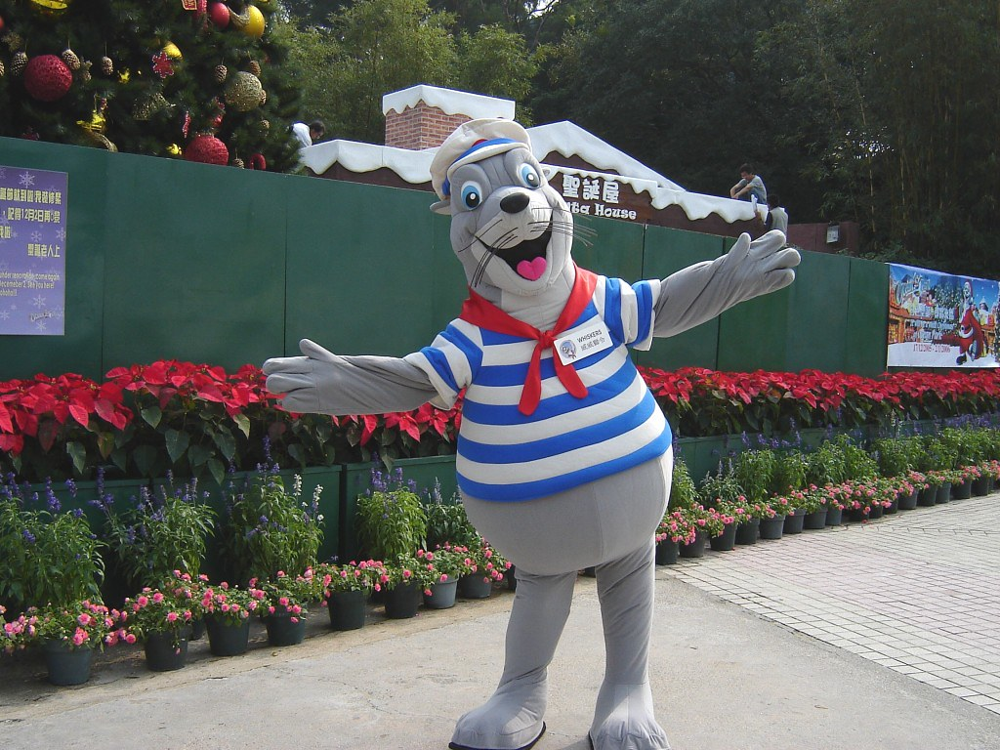
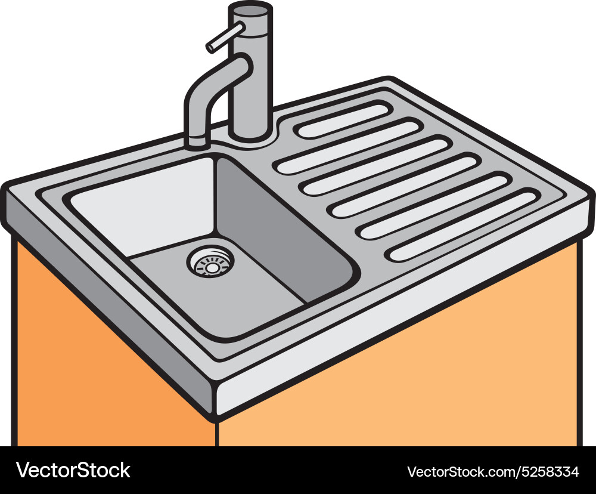
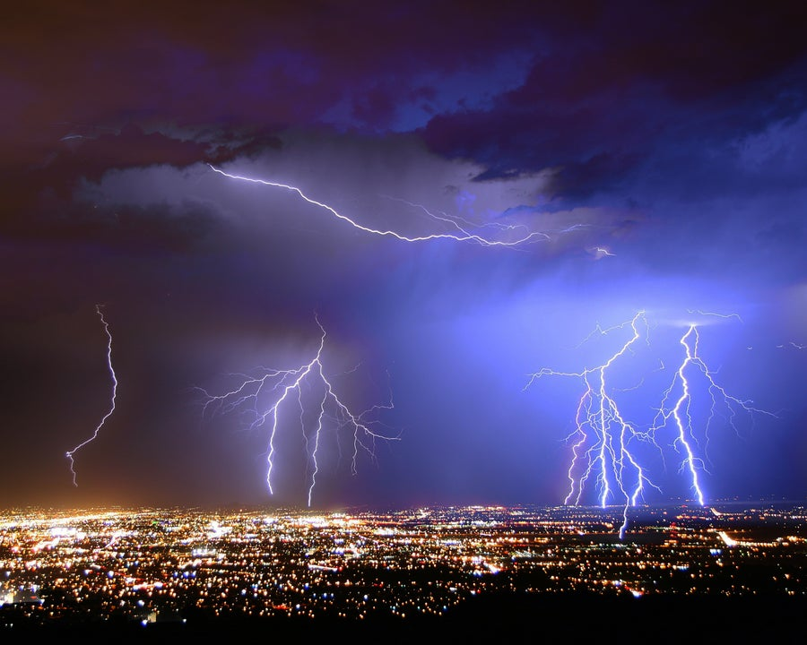
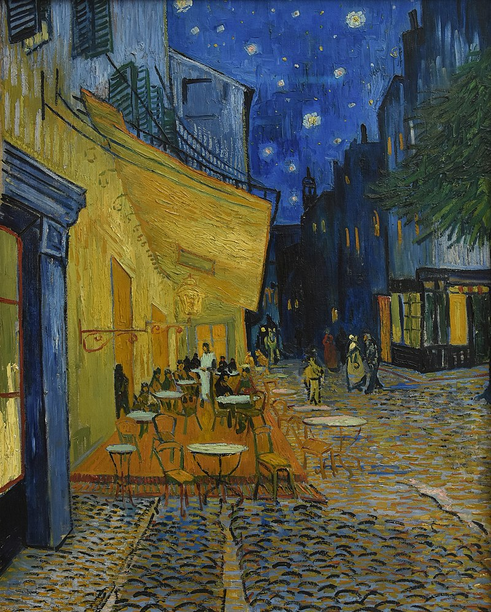
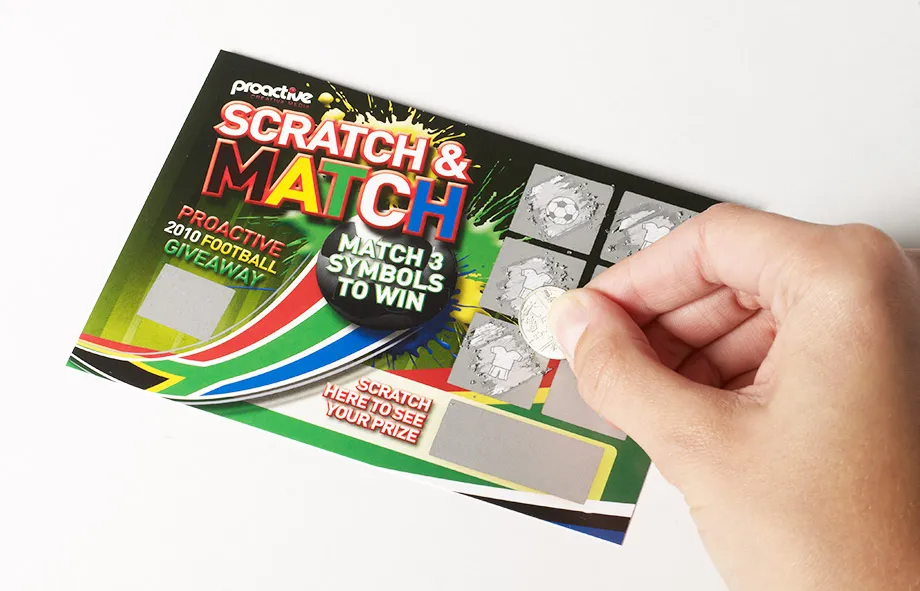

My Vocabulary Page
pick on somebody v //
criticize, punish, or be unkind to the same person often and unfairly
1/ Why are you picking on me?
2/ Stop picking on me!
3/ She felt she was being picked on.
4/ I hope he didn't think I was picking on him.
5/ "It's not very manly to pick on your classmates."
6/ "My sister always picks on me whenever I play."
7/ At school she was a vulnerable little soul and the other girls picked on her.
8/ "In the anime Doraemon, Takesui and Suneo team up to pick on Nobi Nobita."
be picked on by somebody
9/ He gets picked on by the other boys because he's so small.
10/ She was picked on by the other girls because of her size.
skyscraper n(c) //
a very tall modern building, usually in a city
1.1/ The skyscraper towered over the surrounding buildings.
1.2/ On all sides, skyscrapers rose like jagged teeth.
1.3/ The restaurant is at the top of one of the big downtown skyscrapers.
1.4/ "The Burj Khalifa is a famous skyscraper in Dubai."
1.5/ "The Empire State Building is an iconic skyscraper in New York City."
1.6/ "Aside from the harbor and the tall skyscrapers of the central
business district, Sydney also boasts some historic architecture
dating back to the early 1800s."
the world's tallest skyscraper
1.7/ "Taipei 101, situated in Taipei, was once the world's tallest skyscraper."
1.8/ "Today, the Burj Khalifa in Dubai is the world's tallest skyscraper,
swiping the title from Taipei 101, which had taken it from
the Petronas Towers, and so on."
1.9/ "Most major cities in the US. had built skyscrapers by 1929,
frequently as a result of competition between rival cities for
status and investment."
a skyline of skyscrapers
1.10/ "You can see the skyline of skyscrapers in the background."
1.11/ "Hong Kong, known as the concrete jungle, is more than
just a skyline of skyscrapers."
1.12/ "The fact that Frankfurt has a skyline of skyscrapers and highrises
at all makes it somewhat unusual among the vast majority of the EU."
a forest of skyscrapers
1.13/ He found himself approaching a forest of skyscrapers.
1.14/ "I suddenly feel lost in the forest of skyscrapers."
opt v(i) //
choose to take or not to take a particular course of action
opt for something/doing something
1.1/ Mike opted for early retirement.
1.2/ After graduating she opted for a career in music.
1.3/ Instead of a soft drink, she opted for water.
1.4/ "Should I opt for buying a house or keep renting it?"
1.5/ "We opt for visiting the Pulhapanzak Waterfall,"
1.6/ "We opt for fresh raw materials that we handle in our factories in compliance
with the seasonality of the crops, with environmentally friendly methods."
opt for A over B
1.7/ "I would opt for a house over a townhouse in Milpitas."
1.8/ "Diners will opt for takeout over delivery."
1.9/ "During the pandemic,hungry patrons have been strongly encouraged
to opt for takeout over dining in."
1.10/ "You come home from work exhausted because of an unmanageable
workload and opt for takeout over a home-cooked meal."
opt against something/doing something
1.11/ After a lot of thought, I opted against buying a motorbike.
1.12/ "If your face has pink undertones, your stylist may opt against a red base."
1.13/ "If you opt against meat then try other sources of protein such as legumes."
opt to do something
1.14/ Most people opt to have the operation.
1.15/ Many workers opted to leave their jobs rather than take a pay cut.
1.16/ Customers can opt to receive their statements online
rather than through the mail.
see also: v(i,t) choose, n(c,u) option
v(i) opt in: choose to be part of a system or an agreement
2.1/ "Staff can decide to opt in or join at any point."
2.2/ Company policy is to leave new workers out of the pension scheme,
unless they choose to opt in.
opt in to something
2.3/ "If you decide to opt in to our mailing list, you will receive emails that
may include company news, updates, related product or service information, etc."
2.4/ "You can also opt in to the dinner which is a selection of
Egyptian vegetarian or pescatarian dishes."
v(i) opt out: choose not to take part in something
3.1/ "I decided to opt out."
3.2/ "If you decide to opt out, there are two ways to do so."
3.3/ Within any society, there will usually be people who decide to opt out.
opt out of something/doing something
3.4/ "We decide to opt out of the service."
3.5/ Employees can choose to opt out of the pension scheme.
3.6/ "If we decide to opt out of biking, which side is best for us to explore?"
3.7/ "Small entrepreneurs opt out of renting office spaces
and shift to online mode."
3.8/ "If you decide to opt out of membership of the LGPS and subsequently
change your mind you will be able to rejoin the scheme provided you are
under age 75 and you remain in an employment that qualifies you for
membership of the scheme."
option n(c,u) //
one thing that can be chosen from a set of possibilities,
or the freedom to make a choice
1.1/ Failure is not an option.
1.2/ In most cases, I would go for the cheaper option.
1.3/ We are currently studying all the options available.
1.4/ Your doctor will discuss treatment options with you.
1.5/ This particular model comes with a wide range of options.
have an option
1.6/ As I see it, we have two options.
1.7/ "I have an option between two jobs."
1.8/ "Why don't I have the option to upgrade my storage to 2TB?"
the best option, my best option
1.9/ Waiting a year may be your best option.
1.10/ The best option would be to cancel the trip altogether.
1.11/ We felt this was the most viable option.
the only option, my only option
1.12/ Selling the house was our only option.
1.13/ "Running away from the city becomes the only option for many."
an option open to somebody
1.14/ There are various options open to you.
1.15/ "I recall that there is an option open to me. I can choose to boycott
this company and use my free speech to encourage others to do so also."
1.16/ There are various options open to someone who is willing to work hard.
an option for somebody
1.17/ Going to college was not an option for me.
1.18/ Farming is not an attractive career option for many young people.
available options
1.19/ "Thus now is the time to expand the solution space and to assess
all available options to transform the system and evaluate their risks."
look at/explore/consider options
1.20/ "I need to consider my options."
1.21/ "I sit down and look at my options: going to school,
doing rehab and trying to play in the NFL."
1.22/ The program helps students explore career options.
1.23/ "Explore all your options to feel confident and ready
to take whichever path you're interested in."
consider(/think of) something as an option
1.24/ They're considering separation as an option.
1.25/ "I never thought of it as an option earlier in my career."
choose an option
1.26/ Whichever option we choose there'll be disadvantages.
1.27/ "Choose the best option from the options given below."
1.28/ "It can be difficult to choose the best option from the current
pool of available models."
decide on an option
1.29/ Deciding on your best option is not easy.
1.30/ "The time has come to decide on an option."
1.31/ "I will be playing a bit with it to decide on my option."
1.32/ The committee decided in favour of the cheapest option.
have no option (but to do something)
1.33/ I had no option but to ask him to leave.
1.34/ After her appalling behaviour, we had no option but to dismiss her.
1.35/ "I feel I have no option but to take steps to protect my reputation."
leave somebody with no option
1.36/ "I am left with no option but to quit."
1.37/ The poor villagers are left with no option but to risk their lives.
1.38/ They didn't leave him much option - either he paid or they'd beat him up.
the option to do something
1.39/ A savings plan that gives you the option to vary your monthly payments.
1.40/ "I can't find the option to switch from streaming to mirroring."
1.41/ "It's time to take the option to shift position and regain control."
the option of doing something
1.42/ "I am given the option of saying no."
1.43/ Students have the option of studying abroad in their second year.
1.44/ "Customers have the option of paying in installments at IKEA."
1.45/ "When you are forced into paying money back, do you have the option
of paying by installments or do you have to pay all at once?"
the option of something
1.46/ "The option of detention is needed."
1.47/ "Students with extenuating circumstances will only be
given the option of deferral."
1.48/ He was given one month's imprisonment without the option of a fine.
colour options of something
1.49/ "For other color options of this model, click here."
1.50/ "Today we're changing gears and exploring the color options of the model."
1.51/ "That being said, all the colour options of iPhone 15 Pro carry
a titanium-made side frame which tends to attract fingerprints but not
as much as the stainless steel found on the iPhone 14 Pro series."
size options of something
1.52/ "Two size options of diamond are available."
1.53/ "You show her size options of tops when she is shopping tops."
(idiom) keep/leave my options open
2.1/ "I will still keep my options open."
2.2/ At the moment I'm keeping my options open and applying for
as many different jobs as possible.
2.3/ "It's definitely important to keep your options open when dating."
2.4/ "I just want to leave my options open before making a decision."
2.5/ I'm going to keep my options open while I find out about studying abroad.
drag down v //
drag somebody down: make somebody feel weak or unhappy
1.1/ His negativity really drags me down.
1.2/ Dwelling on the past only drags you down.
1.3/ All that stress at work had begun to drag him down.
1.4/ "I feel like social media drags me down a lot."
1.5/ "Don't sink. Drugs drag you down!"
1.6/ "Joe's been ill for weeks now - it’s really dragging him down."
(v) drag somebody/something down:
bring somebody/something to a lower level or standard
2.1/ If he fails, he'll drag us all down with him.
2.2/ "I am the one who is dragging the team down."
2.3/ "There's a toxic person who's dragging the team down."
2.4/ He said that any deal on emissions must not drag down growth.
2.5/ The company said earnings have been dragged down by high start-up costs.
2.6/ Declining prices for aluminium have dragged down the company’s earnings.
drag you down to something
2.7/ Don’t let them drag you down to their level.
2.8/ "He is officially dragging the team down to a lower level and
hurting the team with his poor performances and lousy defense."
2.9/ "Five key players underperformed and it dragged the team down to the pit."
see also: hold you back, let you down
insist v(i) //
state or demand forcefully, especially despite opposition
1.1/ Please go first - I insist!
1.2/ Stay and have lunch. I insist!
1.3/ I'm paying for this - no, I absolutely insist.
1.4/ I didn't really want to go but he insisted.
insist on something
1.5/ He insisted on his innocence.
1.6/ "Through the years we insist on our company mission."
1.7/ "If they insist on a refund they must show that the fault was
there when they bought it."
1.8/ "You can insist on a refund if a consumer guarantee entitles you to one."
1.9/ "As a parent, if I don’t expect and insist on an apology
&nbs; for my kids' misconduct, from my kids themselves, then I risk
raising entitled kids."
insist on doing something
1.10/ She insisted on seeing her lawyer.
1.11/ "They insist on visiting me while I am under pressure."
1.12/ She insisted on telling me every single detail of what
they did to her in hospital.
1.13/ She's 85 now, but she will insist on doing all her own housework.
1.14/ "The policeman insisted on searching me again and I was branded a criminal."
insist on somebody(/something) doing something
1.15/ She insisted on him wearing a suit.
1.16/ "I insist on you being on time."
1.17/ "We insist on you leaving the meeting immediately."
insist on somebody's(/something's) doing something
1.18/ She insisted on his wearing a suit.
1.19/ "We insist on your leaving the room."
1.20/ "I insist on your doing the dishes."
1.21/ "We insist on your paying your workmen in that medium."
insist that ...
1.22/ He insisted that he was innocent.
1.23/ She still insists her critics are wrong.
1.24/ Greg still insists that he did nothing wrong.
1.25/ Jackson has repeatedly insisted that the allegations were false.
1.26/ The government has always insisted that this was not the case.
1.27/ The police insist that they are not relaxing their campaign against drugs.
1.28/ The men at City Hall insist that big spending cuts are just not practical.
insist that somebody/something (should) ...
1.29/ He insists that she should come.
1.30/ The company insisted that the money be paid immediately.
1.31/ They insisted that all swear words be deleted from the article.
(v) insist on doing something: continue doing something
even though other people think it is annoying
2.1/ "Why do you insist on disturbing my peace?"
2.2/ I don't know why you insist on talking about it.
2.3/ "Why do you guys insist on bullying each other?"
2.4/ They insist on playing their music late at night.
2.5/ "I was followed in the train station by a man who insisted on harassing me."
2.6/ "I would not be with someone who insisted on stalking me
because they thought I might cheat."
mascot n(c) //
a person, animal or thing that people believe will bring them
good luck, or that represents an organization or event
1/ "Captain Whiskers is always a mascot of Ocean Park."
2/ "The Michelin Man has remained the mascot of Michelin till this day."
a team mascot
3/ The team's mascot is a giant swan.
4/ "What is the purpose of a team mascot in general?"
5/ Jonny will be the team mascot and will lead the players out onto the pitch.
6/ "The Mariner Moose is the team mascot of the Seattle Mariners,
a Major League Baseball team."
an official mascot, the official mascot of something
7/ Miraitowa - the official mascot of the Tokyo 2020 Olympics.
8/ "If Quora had an official mascot, what would it be?"
9/ "Prior to the 2007 season, the Steelers introduced Steely McBeam
as their official mascot."
a mascot costume
10/ "When you have to wear a mascot costume in Texas!"
11/ "Have you always wanted to wear a mascot costume and be
the center of attention at sporting events?"
12/ "Remember, who wants to put on a mascot costume that
smells like a locker room?"
a mascot performer
13/ "Is there a secure place for the mascot perfomer to
change into or take off the mascot costume?"
involve v(t) //
if an activity, situation, etc. involves something, that thing is a part of the activity
involve something
1.1/ Many of the crimes involved drugs.
1.2/ Any investment involves an element of risk.
1.3/ Inventions typically involve minor improvements in technology.
1.4/ Research involving the use of biological warfare agents
will be used for defensive purposes.
1.5/ Her job involves filing and other general office work.
1.6/ "Film-making is an act of leadership and often involves a lot of money."
1.7/ The reforms will inevitably involve a lot of new paperwork for teachers.
1.8/ The measures to improve the health service will involve
an increase in government spending.
1.9/ The test involves simple calculations, such as addition and subtraction.
involve doing something
1.10/ The operation involves putting a small tube into your heart
1.11/ The process involves using steam to sterilize the instruments.
1.12/ The test will involve answering questions about a photograph.
1.13/ They said that the job would involve travelling to Paris.
involve somebody(/somebody's) doing something
1.14/ "This one involves you doing a little research."
1.15/ The job involves me travelling all over the country.
1.16/ The job involves my travelling all over the country.
1.17/ "Communion involves my coming to God through Jesus Christ."
see also: entail
v(t) if a situation involves somebody or something, he/she/it is affected by it
involve somebody/something
2.1/ The second accident involved two cars and a lorry.
2.2/ There was a serious incident involving a group of youths.
2.3/ "If the accident involves a vehicle containing dangerous goods,
keep well away from the vehicle unless you have to approach to save life."
2.4/ "The incident involved two taxis, two private cars and a truck.
Eight people were injured, and a number of ambulances were called to the scene."
2.5/ "A huge blunder occurred in the Austrian town of Weiz
which involved two dead pensioners."
2.6/ "I'm not trying to horn in on your case, but I want to
know how it involves two dead people."
be involved (in an accident)
2.7/ "Three teens were involved, two injured in Friday rollover."
2.8/ "Twenty-one victims were involved in the case,
with a total of $8.92 million were deceived."
2.9/ "A total of thirteen vehicles were involved in the accident,
including the coach, two taxis, nine private cars and a bus."
v(t) involve somebody/something: include someone in something,
or make them take part in or feel part of it
involve somebody (in something/doing something)
3.1/ You have involved me in a great deal of extra work.
3.2/ I prefer teaching methods that actively involve students in learning.
3.3/ It would be difficult not to involve the child's father in the arrangements.
3.4/ We want to involve as many people as possible in the celebrations.
3.5/ "A good teacher tries to involve children in activities
where they interact with each other."
3.6/ The new mayor is keen to involve the local community in his plans for the city.
involve yourself in something
3.7/ Parents should involve themselves in their child's education.
3.8/ "I seem to have involved myself in something I don't understand."
3.9/ "Why do I involve myself in other people's conversations
when they don't involve me?"
be involved with something
3.10/ She's been involved with animal rights for many years.
3.11/ She was very involved with sports at college, and her studies suffered.
[implicate] involve somebody in a crime
3.12/ His confession involved a number of other politicians in the affair.
3.13/ "He was involved in the crime but was not the main perpetrator."
moderate adj //
that is neither very good, large, hot, etc. nor very bad, small, cold, etc.
1.1/ Temperatures remained moderate throughout the day.
1.2/ "The company is a small business with a moderate team."
1.3/ "A moderate teacher places value on production above all else."
a moderate drinker
1.4/ He is a moderate drinker.
1.5/ "Moderate drinkers live longer than non-drinkers and heavy drinkers."
a moderate price
1.6/ The hotel was a moderate price.
1.7/ "The electric car is sold at a moderate price."
1.8/ "Ancient coins are sold at moderate prices."
at a moderate speed
1.9/ "I walk at a moderate speed."
1.10/ "It is better to speak at a moderate speed - somewhere
between 140 and 180 words per minute."
1.11/ "You need to speak at a moderate speed so that the audience
can hear what you are saying."
1.12/ "Running a long distance at a moderate pace is an aerobic exercise,
but sprinting is not."
(over) a moderate heat
1.13/ Cook the sauce over a moderate heat.
1.14/ "Heat oil in a frying pan and fry steak over a moderate heat
until medium-rare."
(a) moderate success
1.15/ The team enjoyed only moderate success last season.
1.16/ We have had moderate success in changing people's attitudes.
1.17/ "Of those that don't fail within two years, they will achieve a moderate
success, and then 80% of those will fail in the following two years."
a moderate amount
1.18/ The rent has gone up over the years, but in moderate amounts.
1.19/ Even moderate amounts of the drug can be fatal.
1.20/ "I managed to save a moderate amount of money last month."
(a) moderate temperature
1.21/ "Please keep the room at a moderate temperature."
1.22/ "Each process is operated at moderate temperature
and atmospheric pressure."
1.23/ "Cook the porridge at a moderate temperature for approximately 20 minutes."
1.24/ "The above experiments were carried out at moderate room temperature."
1.25/ "Sourdough bread will keep well for up to 3-5 days at a moderate
room temperature of 18-20°C or 64-68°F."
(other examples)
1.26/ A moderate intake of caffeine should not harm you.
1.27/ They are looking for moderate economic growth.
1.28/ There has been moderate improvement in her health since
she began the treatment.
having or showing opinions, esp about politics, that are not extreme
2.1/ "I have a moderate opinion of him."
2.2/ "I wonder if someone has a moderate opinion about that anime."
2.3/ "I have moderate views on homelessness."
2.4/ "It's almost impossible to have a moderate view about the show."
2.5/ "He became known as a moderate politician who opposed
capital punishment and restrictions on immigration."
2.6/ "Today, Iran needs a moderate activist like Mr Pezeshkian, who,
besides having positive personal qualities such as financial integrity, honesty,
transparency, and noble candour, has an outstanding characteristic:
being a moderate activist."
2.7/ When she was young she was a radical, but her political views
have become more moderate as she has gotten older.
n(c) a moderate (see also: an extremist)
2.8/ "He is a moderate when it comes to foreign policy."
2.9/ He is well-known as a moderate in the party.
2.10/ Of the seven members of the committee, five were political moderates.
moderate v(i,t) //
become or make something become less extreme, severe, etc.
3.1/ Oil prices are expected to moderate.
3.2/ By evening the wind had moderated slightly.
3.3/ The weather prediction is for strong winds, moderating by evening.
3.4/ Weather conditions have moderated, making a rescue attempt possible.
moderate something
3.5/ She apologized immediately and moderated her voice.
3.6/ "I need to cool off, I tell him, trying to moderate my voice."
3.7/ The president may have to moderate his stance on tax cuts.
3.8/ "Ventilation can be used to moderate room temperature."
3.9/ "It can even moderate the room temperature, keeping out
extreme heat or cold from your windows."
3.10/ In the short term a rising currency helps to moderate inflation.
3.11/ His views on some social issues had moderated over time.
3.12/ There have been repeated calls for the director to
moderate his plans for layoffs.
see also: ease, alleviate
v(i,t) be in charge of a discussion or debate and make sure it is fair
moderate something
4.1/ They asked him to moderate the debate.
4.2/ The television debate was moderated by a law professor.
4.3/ The local TV anchorman is going to moderate the debate.
v(i) moderate
4.4/ "I will be a great chair because I will moderate between both sides."
4.5/ The encounter took place with both men seated at a table,
with PBS's Gwen Ifill moderating.
see also: preside over something
v(i,t) make certain that the rules of an internet discussion are not broken,
for example by removing any threatening or offensive messages
5.1/ "We don't moderate because people disagree;
we moderate when people are unprofessional."
5.2/ "We will moderate when a tweet is inappropriate, abusive,
or mentions personal information that could identify someone else."
moderate on something
5.3/ The broadcaster has vowed to moderate more strictly
on its social media pages.
5.4/ "It's great to be able to moderate on the page if you happen to be
on the page and see a comment that needs removing."
moderate something
5.5/ Comments on this article will be moderated.
5.6/ The entire message board is moderated to ensure that only
genuine stock market discussions are featured.
5.7/ "In light of this, we would like to be more open on
how we moderate the forum."
v(i,t) make certain that all the people marking an examination use the same standards
6.1/ The marked scripts are sent away to be moderated.
6.2/ We moderate to ensure fairness in marking.
6.3/ "This meeting has the authority to moderate students' results to ensure
the maintenance of fair and equitable practices both across and within all units."
6.4/ "Arbitrary formulas are adopted to moderate examination results."
see also: modify
bereaved adj //
having lost a relative or close friend who has recently died
a bereaved parent
1.1/ The bereaved parents wept openly.
1.2/ "I've been asked to share something about my experience
as a bereaved mother."
1.3/ "When asked how he feels, the bereaved father often says OK
though his stomach may be twisted in a knot."
1.4/ "The bereaved mother of the victim testified that she experienced
anxiety by reason of her son's death."
1.5/ "The Tiananmen Mothers is established by bereaved mothers of
those who died on the fourth of June."
a bereaved family
1.6/ "We reassured the bereaved family members they could overcome the issues."
1.7/ "Our hearts go out to the bereaved families, all of whom have
paid a bitter price for their loved-ones' fateful efforts to bring
China peacefully out of autocracy."
1.8/ "The bereaved family of the 16-year-old urged the education authorities
to look into school bullying and prevent a similar tragedy
from happening again."
n(plural) the bereaved
1.9/ It is generally accepted that the bereaved benefit from counselling.
1.10/ "The bereaved felt that they maintained a bond with their
deceased family member through diaries that had been kept for
the patients during their stay in ICU.
see also: your beloved one, the deceased, decedent
terms for a bereaved family member
n(c) an orphan
2.1/ The civil war is making orphans of many children.
2.2/ "Forty four Jewish orphans lived in an orphanage in the French town of Izieu."
2.3/ "Although some orphans live in an orphanage with food and education,
they don't have any love from parents."
2.4/ "There is not one iota of information to be had as to
the identity of the waifs of the deep - the orphans of the Titanic."
2.5/ "The suspect in the murder was the orphan of the accident."
n(c) a widow, a widower
2.6/ There once was a poor widow who had a beautiful daughter.
2.7/ She is a member of a benevolent society for sailors' widows.
2.8/ It's a bloody disgrace that some war widows don't get a decent pension.
2.9/ "At 19, Evelyn married Milton Frank. Unfortunately, she became
a widow at 20 when Milt passed away on their first wedding anniversary
from tuberculosis, just before a cure was found."
(remark: Evelyn Finkelstein Obituary 1921-2021)
2.10/ "The man lost his wife in a car accident and became a widower."
v(t) be widowed
2.11/ He was widowed at the age of 52.
2.12/ "I am widowed since 2018 May 19th. The pain is still there,
and I don't like this word single."
n(c) (un/des/le/les) parange(s) /pa.ʁãʒ/:
a portmanteau word of parents d'anges (parents of angels),
which means a parent whose child or children have died
2.13/ "Our hearts go out to all parents who lost their child."
2.14/ "À tout les paranges" (to all parents who lost their child)
2.15/ "Pour tous les paranges et les petits anges au ciel!"
(for all the paranges and little angels in heaven)
remark: The word parange was adopted into the French language
in 2021. There is no official English word for parange yet.
desire v(t) //
(formal) want something; wish for something
desire something
1.1/ We all desire health and happiness.
1.2/ They don’t really seem to desire change.
1.3/ The house had everything you could desire.
1.4/ The hotel has everything you could possibly desire.
1.5/ A home of her own was something she had always very much desired.
v(i) desire to do something
1.6/ He desired to return to Mexico.
1.7/ "I desire her to be my wife."
1.8/ I desire only to be left in peace.
1.9/ Fewer people desire to live in the north of the country.
1.10/ The president desires to meet the new prime minister.
1.11/ We all need and desire to find our place in society.
desire somebody to do something
1.12/ She desired him to leave her alone.
1.13/ "I desire her to adorn herself for me."
1.14/ "I desired her to listen to me, and not yield her assent to
what I was going to say, if she could reasonably avoid it."
1.15/ "I desire her to be better than me in every single area of life."
desire of somebody (something)
1.16/ "I desire of you, Lord!"
1.17/ What does her Ladyship desire of me?
1.18/ "What I desire of her is her love and that takes time to nurture."
1.19/ "It was too soon for her to give him the full pleasure
he would always desires of her."
if desired (see also: if need be)
1.20/ Add lemon juice if desired.
1.21/ The dessert can be topped with cream, if desired.
1.22/ Additional courses may be taken if desired.
1.23/ "An employee may decide to take a shorter leave if desired."
see also: want, wish, hope, expect
desire n(c) //
a strong wish to have or do something
2.1/ My desires in life are few.
2.2/ He is filled with conflicting desires.
2.3/ The search for a better life is one of the most
basic desires of human beings.
have(/feel) a desire (to do something)
2.4/ "I have a desire to win the championship."
2.5/ She has a burning desire to be an artist.
2.6/ Teenagers often have a burning desire to look older.
2.7/ Paul had an overwhelming desire to visit India.
2.8/ I suddenly felt an overwhelming desire to laugh.
2.9/ She felt an overwhelming desire to return home.
2.10/ She felt an overwhelming desire to tell someone about what had happened.
2.11/ "I have a strong desire to win. I thrive on competition."
2.12/ She had a strong desire to go back to her home country before she died.
have no desire (to do something)
2.13/ I have no desire to cause any trouble.
2.14/ I certainly have no desire to have children.
2.15/ I have no desire to discuss the matter further.
express/show a desire (to do something)
2.16/ He has expressed a desire to see you.
2.17/ She expressed a desire to visit us.
2.18/ Several people have expressed a desire to see the report.
2.19/ The chairman expressed his desire to expand the company.
repress/suppress a desire (to do something)
2.20/ He repressed a sudden desire to cry.
2.21/ He suppressed the desire to run from the room.
a desire to do something
2.22/ His actions reflect his desire to fit in.
2.23/ He suppressed the desire to run from the room.
2.24/ She confessed a secret desire to be famous.
2.25/ "My desire to get the job done sometimes causes me to be
overzealous and demanding of my organization."
2.26/ "I put my desire to leave on time above your feelings."
2.27/ "How could he understand my desire to get home on time
to deal with needs more pressing than my own?"
2.28/ The team were goaded on by their desire to be first to complete the course.
satisfy/fulfill a desire
2.29/ He now had enough money to satisfy all his desires.
2.30/ "Why do I have to fulfill all my desires and dreams rather than
live a passive, silent life passing away as an insignificant person?"
satisfy your desire for something
2.31/ He needed to satisfy his desire for revenge.
2.32/ "I had found another way to satisfy my desire for adventure."
2.33/ "Helicopters and airboats satisfy my desire for adventure."
2.34/ Horses need to satisfy their desire for space and freedom.
fuel your desire for something
2.35/ "Curiosity, generosity and unwavering resilience fuel
my desire for power and influence."
2.36/ "Orgasms only serve to fuel my desire for her to empty my account."
be motivated by a desire
2.37/ He is genuinely motivated by a desire to help people.
2.38/ They were motivated by a deep desire for money and fame.
a desire for something
2.39/ The human desire for answers is very great.
2.40/ There is a strong desire for peace among the people.
2.41/ This was all Liam needed to fuel his desire for revenge.
2.42/ There's a growing desire among consumers for more organic products.
2.43/ His childhood had created a desire for stability in his life.
2.44/ His desire for political power apparently knows no bounds.
2.45/ Most children have an insatiable desire for knowledge.
a (sexual) desire for somebody
2.46/ She felt a surge of love and desire for him.
a desire that ...
2.47/ "I have a desire that I will succeed."
2.48/ "It is intended to relay my desire that she coexists with me
with confidence and comfort."
2.49/ "My desire that she write me more often was communicated as
a scolding about abiding by my wishes and that she needed to keep me
informed of her every action."
(idiom) your heart's desire
2.50/ "You alone are my heart's desire, and I long to worship Thee."
2.51/ "I got a woman sweet as can be. She is my heart's desire."
2.52/ "It is my heart's desire to love you more and more."
2.53/ When she agreed to marry him, he felt he had achieved his heart's desire.
desired adj //
wanted
1/ "I run at a desired speed on the treadmill."
2/ The robot can walk at a desired velocity using that gait pattern.
3/ "The desired candidate has a degree in computer science, engineering,
math, physics or other fields related to software engineering."
be desired
4/ "I am desired by my significant other."
5/ "Your help is desired in certain situations."
6/ "How is the average Joe supposed to be happy if he is never desired?"
the desired effect
7/ His words had the desired effect.
8/ The medicine did not achieve the desired effect.
9/ He dressed carefully, hoping to achieve the desired effect.
the desired result
10/ "Combining these, we obtain the desired result."
11/ They will miss the desired result altogether."
12/ "If one strategy doesn't work change it until you achieve the desired results."
a(/the) desired life
13/ "Does your work support you to live a desired life?"
14/ "The desired life isn't always pretty, at least when you are trying
to get to that happy place in your life."
see also: wanted, (adj) sought after
remark: 'desired' means 'wanted' while 'desirable' means 'worth wanting or having'
desirable adj //
worth having and wanted by most people
1/ Experience of computers is highly desirable.
2/ This kind of work is seen as desirable.
3/ Such measures are desirable, if not essential.
4/ A new direction was felt desirable for both parties.
5/ She chatted for a few minutes about the qualities she considered
desirable in a secretary.
it is desirable that ... (should) ...
6/ "It is desirable that you be on time."
7/ It is desirable that interest rates should be reduced.
8/ "It is desirable that the company be wound up voluntarily."
it is desirable (for somebody) to do something
9/ "It is desirable to do so in the future."
10/ It is no longer desirable for such young children to take formal written tests.
11/ "In winter it is desirable to sleep early and get up later,
waiting for the sunlight to arrive
a desirable home
12/ "We live in a desirable home that we own."
13/ "We find a desirable residence for the night to hide up in."
a desirable job
14/ It's regarded as a highly desirable job.
15/ "Who apply early get the most desirable jobs."
16/ "Flight attendant is a desirable job for most of young girls."
a desirable feature (in something)
17/ The house has many desirable features.
18/ "Low unemployment is a desirable feature in an economy."
19/ "Slow compression limiting appears to be a desirable feature
in hearing aids for clients with a moderate to profound hearing loss."
a desirable quality (in somebody/something)
20/ "I see a desirable quality in you."
21/ "Honesty is a desirable quality in any person."
22/ "Tension between people is a desirable quality in organizations."
(in) a desirable location
23/ "The real estate is in a desirable location."
24/ The new store is in a highly desirable location.
25/ "The school is in a desirable location and has an accessible range of resources."
(at) a desirable pace/speed
26/ "Our company grows at a desirable pace."
27/ "The more you walk at a desirable pace, the more calories you will burn."
28/ "Are you driving at a desirable speed through your life?"
a desirable aim/objective
29/ Reducing class sizes in schools is a desirable aim.
30/ An end to the hostilities remains a highly desirable objective.
a desirable partner
31/ "Why cash makes you a desirable partner?"
32/ "do you really want to date someone who can take all of the qualities
that make you a desirable partner and decide that they need someone
who is taller, instead?"
(sexually) desirable
33/ He found her intensely desirable.
34/ She suddenly saw herself as a desirable young woman.
35/ "No matter who you are, you are not trying to be sexually
desirable to almost everyone."
compete v(i) //
take part in a contest or game
compete in something
1.1/ He regularly competes in races.
1.2/ He's hoping to compete in the London marathon.
1.3/ Only 21 bodybuilders competed in the event.
1.4/ Are you competing in the 100 metres?
1.5/ "Who was eligible to compete in the Olympics?"
1.6/ "It gives me the freedom to compete in the coming competition."
1.7/ He will compete in track this spring and play football next fall.
1.8/ "How many riders will compete in mountain biking at the 2024 Olympics?"
1.9/ "Twenty teams compete in the Premier League each season,
which is usually played between August and May."
1.10/ "Our students compete in the school's Athletics Carnival."
1.11/ "In PE lessons, children should've developed the physical literacy
and the self-confidence to compete in the sports day."
1.12/ "They were the first grade school to compete in the high school tournament."
1.13/ "Seventeen highly experienced riders and horses representing Australia,
France, Germany, Great Britain, Ireland, The Netherlands, Sweden and
the USA will compete in the test event."
compete in the finals
1.14/ "Some 150 best players compete in the finals."
1.15/ "The two teams that advance will compete in the Finals across
two legs, on April 3 and April 10 to determine the 2024 champions."
compete at a competition/tournament/championship
1.16/ Clubs say they are hungry to compete at the tournament.
1.17/ "Special Olympics athletes set to compete at the championship."
1.18/ "It was an honour to compete at this competition."
compete at a level of a sport
1.19/ They have what it takes to compete at the highest level of their sport.
1.20/ "Not often Ireland can compete at the top level of international athletics."
1.21/ "The majority of players compete at the junior level for a year
or two after finishing high school before making the next step."
1.22/ "We compete at the national level in League of Legends."
1.23/ "We compete at a national level, and our teams mainly consist
of students, staff and graduates."
1.24/ "Students compete at a regional level before competing in the main event."
1.25/ "At 25, you are still relatively young and have plenty of time
to improve your skills and compete at a local level."
compete for something
1.26/ The two athletes are competing for the gold medal.
1.27/ "During the Olympics, athletes compete for the gold medal in each sport."
1.28/ He is expected to compete for the title of world champion next year.
1.29/ "Two Kyrgyz boxers to compete for Olympic qualification in Thailand today."
1.30/ "Afghanistan and Bangladesh compete for a semi-final spot."
1.31/ "A larger than usual number of contenders returned to compete
for a podium spot and a record race time."
compete against somebody
1.32/ They are competing against teams of full-time professional players.
1.33/ He welcomed the chance to compete against professional athletes.
1.34/ "You will compete against other teams on the field in both
friendly matches and championships."
1.35/ "The amazing game Rumble Stars Football allows you to compete
against other teams on the field to achieve victory."
1.36/ "Most schools also have competitive school teams that compete
against other schools in sports like netball and football."
see also: v(i) contend, competitor, opponent, contender, challenger, rival
v(i) try to be more successful than somebody or something else
2.1/ "Think first-year students can't compete? Think again."
2.2/ It's difficult to compete when there are so many similar businesses.
compete in something
2.3/ They simply cannot compete in the international market.
2.4/ "A smartphone manufacturer wants to compete in the smartphone market."
compete at school/work
2.5/ Do kids really need to compete at school to succeed in life?
2.6/ "Why does one choose to compete at work?"
2.7/ "Do women have to be willing to compete at work to reach
pay equity and leadership parity?"
compete for something
2.8/ Both girls compete for their father's attention.
2.9/ "You can have students compete within the team for certain events."
2.10/ Young children will usually compete for their mother's attention.
2.11/ The result is more applicants competing for fewer jobs.
2.12/ "Companies compete for top talent just as professionals
compete for top jobs."
2.13/ Two TV stations are competing for the top spot in the state of Iowa.
2.14/ "Siblings compete for parents' limited resources, such as
attention and acceptance."
2.15/ "Share the love. Often times sibling rivalry may occur when
siblings compete for parents' affection and attention."
compete against somebody
2.16/ It's difficult for a small shop to compete against the big supermarkets.
2.17/ For too long UK shipyards have been competing against each other.
2.18/ "Garry Kasparov competed against artificial intelligence twice."
2.19/ "America is not prepared to defend or compete against artificial intelligence."
2.20/ "Twin sisters compete against each other for recognition."
2.21/ "Brands compete against other brands, but they also relate to
other products or services within a system."
compete with somebody
2.22/ Small independent bookshops find it difficult to compete
with the online stores.
2.23/ "In the tournament, she was competing with the best players in the country."
2.24/ "I can't compete with AI but I think this turned out pretty cool."
2.25/ "A lot of students of every description can't compete
with the best students."
compete on something
2.26/ We can't compete with them on price.
2.27/ "We compete on quality and not on price."
2.28/ "Small retailers often can't compete with big chains on prices."
2.29/ "If you can't compete on price with Amazon, then you have to
compete on experience."
compete to do something
2.30/ "The clan leaders' sons compete to marry the princess."
2.31/ There are too many magazines competing to attract readers.
2.32/ "Most businesses compete to get more customers
by offering different promotions."
2.33/ "Shareholders compete to become the chairman of the board of directors."
see also: v(i) vie, competitor, competition
competition n(c) //
an event in which people compete with each other
to find out who is the best at something
1.1/ "The competition will take place on Sunday rain or shine."
a competition for something
1.2/ This is a competition for the best chef.
1.3/ "This tournament is a competition for higher ranks and rewards,
held every three days."
1.4/ "Each year, almost 500 products enter the competition for the Gold Medal."
1.5/ "Under the training plan plan for 2024, a competition for
the title of Best Sniper was held in the Azerbaijan Army."
enter a competition
1.6/ She's entered a crossword competition.
1.7/ Hundreds of schools entered the competition.
1.8/ I encouraged her to enter the essay competition.
1.9/ "It will be the last time I enter the competition."
join a competition
1.10/ "I have an approved patent for my design, can I still
join the design competition?"
1.11/ "Join the talent competition for over-50s to showcase
your skills and passions, and above all, to inspire generations to come!"
take part in (/participate in) a competition
1.12/ "Four hundred fifty children take part in an art competition."
1.13/ "I have never participated in a calligraphy competition before."
1.14/ "The last time I took part in the competition, the game was
very good and yet the audience didn't think the same."
leave a competition, withdraw from a competition
1.15/ Armenian lifter Tigran Martirosyan was forced to withdraw
from the competition due to a back injury during the warm-up.
1.16/ "In case you decide to leave the competition, we will
definitely understand your decision and it will be accepted."
be eliminated from a competition
1.17/ "Our team was eliminated from the competition in the first round."
be disqualified from a competition
1.18/ One of the participants was disqualified from the competition.
win a competition
1.19/ She's won a prestigious singing competition.
1.20/ She won an international dancing competition.
win second/third/fourth place in a competition
1.21/ He won fourth place in the competition.
1.22/ "UB students win second place in the competition of
Applied Engineering in Chicago."
lose at a competition
1.23/ More people lose at a competition than win.
1.24/ "I lost at a competition and the guy came up to me afterwards
to talk about the match."
hold a competition
1.25/ "The competition will be held on 2nd December."
1.26/ "Last week, we held a swimming competition for our students
and yesterday we awarded the winners."
in a competition
1.27/ "You cheated in the competition."
1.28/ "A competitor or team shall be disqualified for taking part
in a competition when doped."
1.29/ "A member of the relay team has been doped in the competition."
1.30/ "The only thing he needed to do was to win Chu Han
fair and square in the competition."
a fierce competition
1.31/ "The NFL playoffs are always a fierce competition."
1.32/ The competition on the track looked fierce and her heart sank.
a keen competition
1.33/ "In a keen competition with more than 100 proposals,
only four teams received First Place Awards."
a national competition, a regional competition
1.34/ "I joined a local competition during my preparation of the examination."
1.35/ "I once participated in a national competition,
but found it far beyond my skills."
1.36/ "As part of World Space Week, some of our S1 pupils took part in
a national competition to design a UK spaceport."
1.37/ "Each team must compete in their regional competition to advance to Nationals."
an interschool competition
1.38/ "You have won a prize in an interschool competition."
a high school competition
1.39/ "Five local teams are heading to the state high school
baseball competition this weekend
an advanced-level competition, an entry-level competition
1.40/ "The contest, called the 2022 CAE-NCX, is an advanced-level competition."
1.41/ "What started as an entry-level competition allowing novice dancers
the opportunity to take to the stage has evolved into a must-attend competition
for hip-hop dancers around the country."
a competition for somebody
1.42/ "Best in Bloom is a competition for people of all ages
and all gardening abilities."
1.43/ "The site - which is owned by Google - is launching a competition for
teenagers to create an experiment that could be carried out in space."
an open competition
1.44/ "It was the very first time for me to join an open competition."
1.45/ "The Stratford & East London Music Festival, founded in 1882,
is a competition open to people of all ages."
see also: a race, a match, a game, a contest, a talent show
n(u) situation in which people or organizations compete with
each other for something that not everyone can have
compeition for something
2.1/ Competition for jobs is intense.
2.2/ "Power shifts in UK job market as competition for top jobs falls."
2.3/ Competition for resources is common in natural communities.
2.4/ "She also faced strong competition for an Olympic place
in the other event she was targeting."
2.5/ "Hong Kong faces headwinds in competition for global talents."
compeition to do something
2.6/ There's fierce competition to get into that school.
2.7/ "Brown shakes off nerves and competition to advance to
Saturday's final in the 200-meter dash."
2.8/ "She would have less competition to date a short man."
2.9/ "At every stage there is keen competition to advance in carrier."
compeition between A and B
2.10/ "Do grades put unnecessary competition between students?"
2.11/ There's a lot of competition between computer companies.
2.12/ Fierce competition exists between schools in the area.
2.13/ "Competition between rival companies increases the value
of employees' human capital."
2.14/ "Customers today often compare product prices online before purchasing,
leading to more competition between similar products and companies."
2.15/ "You may ignite some competition between staff members
to perform better than their peers."
compeition among a group of people
2.16/ The government said the new laws would enhance competition among banks.
2.17/ "The competition among talents to seize jobs is becoming more and fiercer."
2.18/ "A couple of program leaders even said they were strongly opposed to
encouraging competition among girls as this focus detracted from efforts
to build camaraderie and self-confidence."
compeition from somebody/something
2.19/ The firm is facing stiff competition from its online rivals.
2.20/ "Consider a monopoly firm, comfortably surrounded by barriers to entry
so that it need not fear competition from other producers."
2.21/ "It is not fun to have competition from your best friend."
in compeition with somebody/something (for something)
2.22/ The two companies are in competition with each other.
2.23/ Public education is run in direct competition with the private sector.
2.24/ We are in competition with four other companies for the contract.
2.25/ "Hong Kong has long been in competition with Singapore
for the status of Asia's FinTech hub."
have/face competition
2.26/ "We always face competition in every part of life."
lose out in competition
2.27/ "Enterprises lose out in competition in the knowledge-based economy."
2.28/ "Taiwan LED makers lose out in competition with China makers
for LED street lamps in Thailand."
take the lead in competition
2.29/ "Apple is searching for an innovative measure to continuously
take the lead in competition with Google."
have an edge in competition
2.30/ "Bandai always has an edge in competition with other
small and medium-sized companies."
keen/fierce/stiff/intense/tough competition
2.31/ We now face stiff competition in foreign markets.
2.32/ "Wheat farmers face tough competition from abroad."
2.33/ The competition on the track looked fierce and her heart sank.
moderate competition
2.34/ "Moderate competition helps to speed up the process of
implementation of innovations."
friendly competition, healthy/vicious competition
2.35/ Their rivalry had been one of friendly competition.
2.36/ "There is vicious competition among students at school."
2.37/ "Positive, healthy competition at school will help build
students up, and engage them as they discover new skills."
domestic competition, foreign competition
2.38/ Foreign competition had reduced their sales.
2.39/ "Domestic competition in China has played an important role
in bringing down prices."
be no competition
2.40/ Why are you jealous of her? She's no competition!
2.41/ "I am no competition with no one. I run my own race."
sink v(i) //
go down below the surface or towards the bottom of a liquid or soft substance
1.1/ The submarine sank after an explosion.
1.2/ Duane was in waist-deep and sinking fast.
1.3/ The boat filled with water and began to sink.
1.4/ We all thought we were done for when the boat started to sink.
1.5/ It seemed as though the ship had sunk without trace.
1.6/ "If the lemon sinks in water, he is not cheating;
if the lemon floats, he is cheating."
1.7/ Their motorboat struck a rock and began to sink.
sink to the bottom of the sea(/the ocean)
1.8/ The ship sank to the bottom of the sea.
1.9/ The Titanic was a passenger ship which sank to
the bottom of the ocean in 1912.
1.10/ The kids watched as the coin sank to the bottom of the pool.
sink into something
1.11/ The wheels started to sink into the mud.
1.12/ "The oil slick will sink to the seabed."
1.13/ Our feet sank deep into the soft sand as we walked.
1.14/ "The vehicle sank into the swimming pool."
1.15/ It's good to sink into a hot tub at the end of a hard day's work.
sink in somewhere
1.16/ "A US oil ship sank in the South China Sea."
1.17/ "The British warship HMS Sussex sank in the Straits of Gibraltar in 1694."
1.18/ "On January 9, 1972, the British ocean liner Queen Elizabeth
burst into flames and sank in Victoria Harbour."
1.19/ "The container ship sank in shallow water."
1.20/ "On 14 May the ferry capsized and sank in deep water near Golapchipa."
sink up to a level in somewhere
1.21/ He sank up to his knees in the mud.
1.22/ The heavy guns sank up to their barrels in the mud.
sink near somewhere
1.23/ "Five days later, the ship sank near Greece in the deepest part
of the Mediterranean Sea."
1.24/ "The ship sank near the Iranian port of Jask, some 1,270 kilometers
southeast of Tehran on the Gulf of Oman near the Strait of Hormuz
- the narrow mouth of the Persian Gulf."
sink off somewhere
1.25/ The tanker sank off the coast of Alaska.
be likely/liable to sink
1.26/ "The ship is liable to sink and that they must repair the hole down below.”
1.27/ "The ship is likely to sink in river water with equal water as sea one."
see also: float, drown, (adj) sunken, (adj) buoyant, n(c) a buoy,
n(c) a life jacket, n(c) a lifebuoy
(idiom) sink or swim
1.28/ The new students were just left to sink or swim.
1.29/ In a situation like this, you either sink or swim.
1.30/ They don’t give you a lot of guidance - you’re just left
to sink or swim, really.
1.31/ "In too many classrooms, children are left to sink or swim
if they don’t speak English."
v(t) damage a boat or ship so that it goes below the surface of the sea
2.1/ The battleship was sunk by a torpedo.
2.2/ Enemy aircraft sank two battleships.
2.3/ Bombs sank all four carriers.
2.4/ Five brothers all died when their ship was sunk.
2.5/ A luxury yacht was sunk in a bomb attack yesterday.
2.6/ "Tenedos and 15 other ships were sunk off the bar of
Charleston's main channel."
2.7/ The explosion sank the ship in 300 feet of water.
be sunk by an iceberg
2.8/ "Titanic is not the only ship sunk by an iceberg."
2.9/ "The unsinkable Titanic was sunk by an iceberg."
be sunk by rocks
2.10/ "Some 200 of these boats have been sunk by rocks and snags."
be sunk by a storm
2.11/ "Can a modern aircraft carrier be sunk by a storm?"
2.12/ Two of our boats had been sunk by the storm.
v(i) move downwards to a lower level
3.1/ The sun was sinking in the west.
3.2/ The sun had sunk below the horizon.
3.3/ The sun was sinking behind the coconut palms.
3.4/ The sun glowed red as it sank slowly below the horizon.
3.5/ The foundations of the building are starting to sink.
sink onto somewhere
3.6/ Her chin sank onto her chest, and she looked despairing.
3.7/ "He leaves more kisses as he sinks onto her chest."
3.8/ "The blunt side of the dagger sinks onto her chest while
she felt as if some of her ribs cracked. "
v(i) fall down or sit down heavily, esp because you are very tired and weak
sink into something
4.1/ I sank into an armchair.
4.2/ He sank lower into his chair.
4.3/ She let out a groan and sank into a chair.
sink back in/into something
4.4/ She sank back into her seat, exhausted.
4.5/ She sank back in her chair and closed her eyes.
sink to the floor, sink to the ground
4.6/ The wounded soldier sank to the ground.
4.7/ He let go of her shoulders and she sank at once to the floor.
4.8/ Exhausted after the race, she sank to the ground.
sink to your knees
4.9/ The old man had sunk to his knees.
4.10/ The minister sank to his knees and prayed.
4.11/ "I sank to my knees in the middle of the parking lot,
hunched over with my head in my shaking hands."
sink down on/onto something
4.12/ Marion sank down on a rock, and wept.
4.13/ She sank gracefully down onto a cushion at his feet.
4.14/ "I sank down on her body and slowly slid into her."
v(i) decrease in amount, volume, strength, etc.
5.1/ Student numbers have sunk considerably this year.
5.2/ Gasoline prices sank last year.
5.3/ Shares sank 3% Wednesday to close at $39.35.
5.4/ Shares in the company have sunk as low as 620p.
5.5/ The airline industry is sinking under the weight of its losses.
be sinking fast (= get weaker and be about to die)
5.6/ He is clearly sinking fast.
5.7/ The doctor said that the boy was sinking fast.
sink to a level
5.8/ The pound has sunk to its lowest recorded level against the dollar.
5.9/ Relations between the countries have sunk to a new low.
5.10/ The dollar sank to a record low against the euro.
5.11/ The population of the village sank to just a few families.
5.12/ "The Japanese yen has sunk to a 34-year low, trading as low as
¥160 to the dollar on Monday."
5.13/ "Working on our relationship sinks to the bottom of our priority lists
when more immediate and pressing issues require our attention."
sink into something
5.14/ She sank into a deep sleep.
5.15/ He sank deeper into depression.
5.16/ The good mood left me and I sank into depression.
5.17/ He sank into deep despair when he lost his job.
5.18/ The project gradually sank into oblivion.
5.19/ They lost all their money and sank into desperate poverty.
5.20/ "Hong Kong is sinking into a recession with no recovery in sight."
your heart sinks
5.21/ My heart sank when I saw how much work there was left.
5.22/ She watched him go with a sinking heart.
5.23/ His heart sank the way it always did when she left him.
5.24/ She felt desperately tired, and her spirits sank.
v(t) prevent somebody or somebody’s plans from succeeding
sink somebody
6.1/ If the car breaks down, we'll be sunk.
6.2/ A price war sank the company.
6.3/ "We should cut our losses before the this programs sinks us all."
sink something
6.4/ I think I've just sunk my chances of getting the job.
6.5/ This rain could sink our plans for the barbecue.
6.6/ "This duet decisively sank my hope of sleep."
6.7/ I thought these issues would sink his career.
(v) sink (something) into something
7.1/ I felt her nails sink into my wrist.
7.2/ My feet sink into the sand with every step.
7.3/ She sank her fork into the pie.
sink your teeth into something
7.4/ We sank our teeth into the enormous cakes.
7.5/ I sank my teeth into the sandwich.
7.6/ The dog sank its teeth into my arm.
7.7/ The dog sank its teeth into my leg.
7.8/ The dog sank her teeth into the ball and ran off with it.
(v) sank money into something (= spend money on something)
7.9/ We sank all our savings into the venture.
7.10/ We sank all our money into my brother's business.
7.11/ They sank their entire savings into their house.
v(i) (of voice) sink to a whisper
8.1/ Her voice sank to a whisper.
8.2/ The child's voice sank to a whisper as she admitted that
she had broken the window.
8.3/ The voice sinks to a whisper: "I don't really want my manager
to know what I'm doing."
8.4/ "I entirely missed what you said at the end there,
when your voice sank to a whisper."
sink n(c) //
a bowl that is attached to the wall in a kitchen or bathroom
in which you wash dishes or your hands
9.1/ I felt chained to the kitchen sink.
at the sink
9.2/ "I wash my face at the bathroom sink."
9.3/ She was at the sink, washing the dishes.
put/leave something in a sink
9.4/ Put the dishes in the sink.
9.5/ Don't just leave your dirty plates in the sink!
block a sink
9.6/ "It's then only a matter of time before other deposits settle
at these bottlenecks and block the sink entirely."
9.7/ "Many things can block a sink. Food scraps, hair or even
tree roots can get into the drains."
an outdoor sink
9.8/ "Communal outdoor sinks are very common at Japanese schools."/p>
9.9/ "A female toddler washes her hands at an outdoor sink."
a kitchen sink
9.10/ "When you empty the kitchen sink, you use all means and
resources at your disposal in order to reach your goal."
9.11/ "How often should you clean the kitchen sink drain?"
a bathroom sink
9.12/ "A girl brushes her teeth at a bathroom sink."
remark: a bathroom sink is also called a basin
accompany v(t) //
travel or go somewhere with somebody/something
accompany somebody/something
1.1/ His wife accompanied him on the trip.
1.2/ Warships will accompany the convoy.
1.3/ "I accompany my kid on the way to school."
1.4/ His faithful old dog accompanied him everywhere he went.
accompany somebody/something to somewhere
1.5/ I must ask you to accompany me to the police station.
1.6/ Would you like me to accompany you to your room?
1.7/ "I used to accompany my kid to school by bike."
1.8/ "As an adult, you might be stressed in the morning, having to
leave for work, make breakfast, or accompany your kid to school."
1.9/ "Mother and Daddy accompanied me back to Hong Kong."
be accompanied by somebody
1.10/ Visitors must be accompanied by club members.
1.11/ Each young person must be accompanied by an adult.
1.12/ Students cannot leave the building during class hours
unless they are accompanied by an adult.
1.13/ She was accompanied on the visit by her partner.
1.14/ The groups are always accompanied by an experienced mountain guide.
1.15/ "She accompanied me by ferry and taxi to the gate,
where we sat with tea and said goodbye."
1.16/ The prince is always accompanied by his bodyguards.
accompany you home, walk/drive you home
1.17/ "I will accompany you home."
1.18/ "These guys will accompany you home."
1.19/ "Who's going to drive you home tonight?"
1.20/ "What does it mean if a girl asks you to walk her home after a club?"
see also: a companion, n(u) company
v(t) happen or appear with something else
accompany something
2.1/ Shouts of protest accompanied this announcement.
2.2/ There's a workbook to accompany the course book.
2.3/ "A certificate of authenticity accompanies the box."
2.4/ "A keychain also accompanies the box inspired by
a helmet with golden finishes."
be accompanied by something
2.5/ The course books are accompanied by four CDs.
2.6/ The text is accompanied by a series of stunning photographs.
2.7/ "Perhaps the most remarkable gift is a magnificent portrait of
Mrs. Cleveland, accompanied by her autograph and that of the President."
2.8/ "Famine is accompanied by broken health systems,
damaged infrastructure and shattered economies."
see also: go hand in hand with something
v(t) sing or play an instrument with another musician or singer
accompany somebody at/on something
3.1/ Miss Jessop accompanied Mr Bentley on the piano.
3.2/ The singer was accompanied on the piano by her sister.
3.3/ Erin sang while I accompanied on the guitar.
3.4/ "Before leaving campus, she performed the last song,
accompanied on the drums by one of the students."
3.5/ "She played pieces on the piano by Handel, Bach, Schubert and Pachelbel,
and was accompanied on the violin by Maria."
criticize v(i,t) //
express disapproval of someone or something
1.1/ All you ever do is criticize!
1.2/ We'll get nowhere if all you can do is criticize.
criticize somebody/something
1.3/ "My boss keeps criticizing me publicly during meetings."
1.4/ My siblings don't like me criticizing our parents.
1.5/ Journalists who strongly criticize the government can be
heavily fined or imprisoned.
1.6/ The decision was harshly criticized by environmental groups.
1.7/ "It's a lot easier to criticize a plan than to offer useful suggestions.
1.8/ She grudgingly admitted that she had been wrong to criticize him.
1.9/ "Being a very controversial topic for many years,
capital punishment is criticized as well as favored."
criticize somebody/something for something
1.10/ She has been sharply criticized for her comments.
1.11/ Sometimes we get criticized for not being focused enough on strategy.
1.12/ The government has been criticized for not taking the problem seriously.
1.13/ "The trial in the State of Georgia vs Hannah Payne case is postponed,
and the defendant's counsel is criticized for misconduct."
1.14/ The government is being widely criticized in the media for
failing to limit air pollution.
criticize somebody/something over something
1.15/ The company has been criticized over its handling of the contract.
1.16/ "My boss is a narcissist, He criticized me over a idiotic thing."
be criticized as + adj
1.17/ The law was widely criticized as racist.
1.18/ "The short video was criticized as cruel and offensive."
1.19/ "Capital punishment is criticized as barbaric and inhumane."
be criticized as something
1.20/ The project has been criticized as a waste of money.
1.21/ "He was criticized as a tyrant and a bungling amateur."
1.22/ "Corporal punishment is criticized as destroying children's creativity."
see also: criticism, blame somebody for something, blame something on somebody
v(t) give an opinion or judgment about a book, film, etc.
2.1/ We were taught how to criticize poems.
2.2/ We're a group of artists who meet to discuss ideas
and criticize each other's work.
2.3/ "Many held their tongues when criticizing the film
for fear of being seen as anti-Semetic."
2.4/ "How can I teach myself to study, analyze and criticize films?"
see also: a critic, the critics
complain v(i) //
say that something is wrong or not satisfactory
1.1/ You're always complaining!
1.2/ He really has no right to complain.
1.3/ She never complains, but she's obviously exhausted.
1.4/ "Tom complained at the front desk about the noise."
1.5/ "I complained at a hotel once and got a complimentary night
in their suite which was unbelievably amazing."
complain about something
1.6/ All the guests complained about the noise.
1.7/ Lots of people have complained about the noise.
1.8/ Shoppers complained about the lack of toilet facilities.
1.9/ "Is it appropriate to complain about food quality?"
1.10/ "I will complain about hygiene in a restaurant if need be."
1.11/ Bill and Nancy are always complaining about their neighbor,
whose dog frightens their kids.
1.12/ She complained bitterly about the lack of help she received.
1.13/ She was complaining about all the sex and violence on television.
complain to somebody
1.14/ "If it is bad enough, complain to the manager."
1.15/ Annoyed residents have complained to the police.
1.16/ "The mum then went into the school to complain to the class teacher."
1.17/ "Russians regularly complain to the media by the hundreds of thousands."
1.18/ If the service was so bad, why didn't you complain to the manager?
complain to somebody about somebody/something
1.19/ I'm going to complain to the manager about this.
1.20/ I'm going to complain to the authorities about this!
1.21/ "I could not complain to the parents about the kids."
1.22/ "The school must give students and their parents an opportunity
to complain to the school about bullying."
1.23/ "Should I complain to my boss about an inefficient team member?"
complain of something
1.24/ "The elderly complain of high costs."
1.25/ "Visitors complain of poor food quality."
1.26/ "More than three in ten (35%) complain of poor food quality"
1.27/ The defendant complained of intimidation during the investigation.
1.28/ "Domestic workers complain of poor living conditions."
complain at something
1.29/ She complained at the unfairness of it all.
1.30/ "You always complain at people putting their points of view."
complain that ...
1.31/ He complained bitterly that he had been unfairly treated.
1.32/ He complained that his boss was useless and he had too much work.
1.33/ "I complained that the room was too small for 3 pax."
see also: make a complaint, a complainant
complain of something: say that you feel ill or are suffering from a pain
2.1/ She left early, complaining of a headache.
2.2/ She's been complaining of a bad back recently.
2.3/ "Individuals will often complain of a swollen face or a swollen tongue."
2.4/ "Amy sees patients often who complain of a chronic cough."
2.5/ "Patients complain of a chronic ache with occasional severe
sharp spasms or electric shocks."
2.6/ "Many people often complain of leg pain that is accompanied by leg swelling."
2.7/ "Most elderly complain of dental problems like loose teeth,
ill-fitting dentures or problems in chewing."
die out v //
become less common and finally stop existing
plants or animals die out
1/ Dinosaurs died out millions of years ago.
2/ "Large mammals died out at the end of the ice age."
3/ "I don't think we should let endangered species die out."
4/ "One of the last known groups of woolly mammoths died out
because of a lack of drinking water."
5/ This species has nearly died out because its habitat is being destroyed.
something dies out
6/ "If a tradition dies out, it may be unrecoverable."
7/ It's a custom that is beginning to die out.
8/ "Floppy disks died out thirty years ago."
9/ "Vinyl records died out completely after streaming came along."
10/ "In the nineteen nineties black and white television died out,
and so did battery-powered TV."
see also: extinct, disappear, die off, die down
die down //
become gradually less strong, loud, easy to notice, etc.
1/ The flames finally died down.
the applause dies down
2/ It was several minutes before the applause died down.
3/ When the applause had died down, she began her speech.
4/ "My tinsel world disappears when the applause dies down tonight."
bad weather dies down
5/ "The storm died down and it was calm."
6/ A storm is expected tonight, but the wind and rain should die down by morning.
7/ "Listen to others. Look to the horizon. Know that the storm will die down."
8/ "When the rain died down in the sunset, it left behind the mist afloat
on the Hương River and the clouds lost on the mountains upstream."
9/ "Fortunately enough the bad weather died down and returned
to its true form, which bought sunny days through and through."
10/ "My family and a bunch of neighbors started to survey the damage to
the neighborhood as the bad weather died down in the afternoon and found
many trees have fallen in the areas."
the pain dies down
11/ "I soothe my wound until the pain dies down."
12/ "When the pain dies down and the dam becomes a river,
the fire burns out under the rain."
13/ "I injured my back slightly doing squats and the pain
died down after a day or so."
14/ "The stomach ache died down a lot once I had relieved myself."
15/ "If my toothache dies down I tried to take a nap."
a symptom dies down
16/ "Sit upright and take rest, as opposed to lying down,
until the symptom dies down."
17/ "Then my symptoms died down, and I had a scan. The night of my scan,
I had severe bloating, severe abdominal pain to the point of not being
able to walk and copious bleeding."
see also: fade, vanish
thunderstorm n(c) //
a storm with thunder and lightning and usually heavy rain
1/ "Enjoy the sun while you can, there's a thunderstorm on the way."
2/ He slept well, unaware of the thunderstorms which filled the night.
hit/encounter a thunderstorm
3/ " Your Minecraft boat hits a thunderstorm."
4/ "We hit a thunderstorm on our way back home.
It washed the car and boat clean."
5/ "We mostly had great weather, but we did hit a thunderstorm
on our journey through the Ionian Sea."
6/ "What should you do if you inadvertently encounter a thunderstorm?"
get caught in a thunderstorm
7/ "This weekend I got caught in a thunderstorm."
8/ "We got caught in a thunderstorm on the road to Erfurt."
9/ "If you get caught in a thunderstorm while hiking,
run to a hollow and squat down in a crouched position."
ride/drive into a thunderstorm
10/ "If you drive into a thunderstorm, slow down and use extra caution."
11/ "Never ride into a thunderstorm; wait it out in an appropriate shelter."
pass throung a thunderstorm
12/ "A van traveling 60 km/h has just passed through a thunderstorm that
left a film of water 0.05 mm thick on the top of the van."
13/ "The train passed through a thunderstorm and the car wherein
plaintiff sat was struck by lightning and he was severely injured."
fly over a thunderstorm
14/ "Even if you can fly over a thunderstorm, turbulence can be
a minor problem from weakening updrafts over the storm."
15/ " Gann was an airline pilot in the days when planes could
not fly over a thunderstorm."
avoid a thunderstorm, detour around a thunderstorm
16/ "By how many nautical miles should we avoid a thunderstorm?"
17/ "If you absolutely can't avoid a thunderstorm, don't attempt to
turn around once you've entered the storm."
18/ "In Australia and many other countries, jetliners can divert from
their planned flight paths to detour around a thunderstorm."
a thunderstorm dies down
19/ Thunderstorms die down after sunset, mostly cloudy overnight."
20/ "There can still be big pockets of hot air, even as a thunderstorm dies down."
in a thunderstorm
21/ "It is dangerous to walk in a thunderstorm."
22/ "Never walk in a thunderstorm carrying a metal pole."
23/ "Have you ever taken a long walk in a thunderstorm?"
24/ "I got completely soaked in a thunderstorm."
25/ "What are the odds of getting struck by lightning if you are
wet in a thunderstorm?"
during a thunderstorm
26/ The church was struck by lightning during a violent thunderstorm.
27/ "Does anyone have any good tricks to get back to
sleep during a thunderstorm?"
see also: a rain storm, a rain shower, a typhoon
thunder n(u) //
(a natural phenomenon)
1.1/ Thunder crashed in the sky.
1.2/ "Why does lightning always come before thunder?"
1.3/ "Thunder is the sound caused by lightning."
1.4/ "Why do some storms produce loud thunder, while others do not?"
1.5/ "Thunder is a natural phenomenon that has fascinated humans for centuries."
hear thunder, listen to thunder
1.6/ "I hear the rumble of distant thunder."
1.7/ "My mom loved to tell the story of how, as a baby, I would
crawl to the screen door to watch lightning and hear thunder
- the brighter and louder, the better."
1.8/ "Thunderstorms are soothing to me, I love to watch lightning
and listen to thunder."
1.9/ "Sometimes, we hear loud thunder, but there isn't a thunderstorm overhead."
distant thunder
1.10/ The lightning flashed and distant thunder rolled.
a clap/crash/roll of thunder
1.11/ A loud peal of thunder woke him from restless sleep.
1.12/ A loud clap of thunder made the herd stampede.
1.13/ A loud crash of thunder broke the silence of the night.
1.14/ There was a clap of thunder and then it started to pour with rain.
1.15/ "There were loud claps of thunder. Lightning lit up the world.
The earth shook and trembled."
1.16/ "A clap of thunder echoes around the sky and an icy, howling wind picks up."
thunder and lightning
1.17/ "Thunder and lightning come hand in hand."
1.18/ "Are you afraid of thunder and lightning?"
1.19/ "Some people are afraid of thunder and lightning but not rain."
1.20/ "I am very scared of thunder and lightning and my house is not earthed."
(adj) thunder loud,
1.21/ "Now thy voice is thunder loud."
1.22/ "Inside, before the teams had even been introduced, the arena
was thunder-loud, certainly as noisy as it has ever been before the game
has actually started."
adj(before noun) thunderous
1.23/ "It was no wonder he sat down to such thunderous applause."
1.24/ "He was cheered on by thunderous applause from the crowd and screams
of 'You can do it!'"
I Hear Thunder (lyrics from BBC Teach)
1.25/ "I hear thunder, I hear thunder,
Hark don't you, hark don't you?
Pitter-patter raindrops, pitter-patter raindrops,
I'm wet through, so are you."
n(u) a loud noise like thunder
2.1/ The thunder of gunfire announced the beginning of the attack.
2.2/ I couldn't hear what he was saying over the thunder of the waterfall.
2.3/ "At the thunder of your voice, the peoples flee;
at your silence, the nations scatter."
the thunder of traffic
2.4/ "The streets are filled with the thunder of traffic."
2.5/ "Johnson raised his megaphone and shouted over the thunder of traffic."
see also: a crescendo, a diminuendo
thunder v(i) //
when it thunders, a loud noise comes from the sky
3.1/ The sky grew dark and it started to thunder.
3.2/ "Why do dogs get so scared when it thunders?"
3.3/ "Does your dog freak out when it thunders?"
3.4/ "When it thunders again, my dog goes outside via the doggie door."
v(i) make a very loud, deep noise
4.1/ A voice thundered in my ear.
4.2/ "The noise of the engines thunders in my ears as we hurtle in
between the jagged edges of mountains."
thunder past
4.3/ Heavy trucks kept thundering past.
4.4/ The train thundered past, shaking the whole house.
4.5/ The horses thundered past, shaking the house.
thundering traffic
4.6/ "I'll be stuck in thundering traffic."
4.7/ "Within living memory these roads have gone from being
quiet and peaceful to a steady stream of thundering traffic."
lightning n(u) //
(a natural phenomenon)
1/ The computer failure was due to a glitch caused by lightning.
be struck by lightning
2/ That tree was struck by lightning.
3/ He was struck by lightning and killed.
4/ Have you ever been struck by lightning?
5/ "Only bad people are struck by lightning, right?"
6/ "Soon after, he was struck by a lightning bolt."
7/ "A bolt of lightning struck a tree and split it in half."
a lightning strike, a lightning bolt
8/ Lightning strikes caused scores of fires across the state.
9/ "Anyone outside near a lightning strike is potentially
a victim of ground current."
a flash of lightning, a bolt of lightning
10/ "There's not much left of his house after it was struck
by a bolt of lightning."
11/ "You shouldn't look at a flash of lightning or a welding arc
without protecting your eyes first.
with lightning speed, at lightning speed
12/ She changed her clothes with lightning speed.
13/ She moves at lightning speed.
14/ "Can you walk at lightning speed?"
15/ "You can complete the task at lightning speed."
16/ "The Shanghai factory went up at lightning speed and without
a local partner, a first for a foreign auto company in China."
ease up v //
gradually stop or become less
1.1/ At last the rain began to ease up.
1.2/ The snow was easing up and people were leaving their houses.
1.3/ "Late in the afternoon the typhoon eased up a little."
1.4/ "The rain eases up in Far North Queensland."
1.5/ "A pedestrian walks down South Fourth Street as a thunderstorm eases up."
(physical pressure) ease up (on something)
1.6/ "Ease up, ease up - you're going to crush me!"
1.7/ "Ease up before you hit the cow."
1.8/ Ease up on the brakes there. We don't want to come to a stop too suddenly.
1.9/ "Whoa, ease up on the joystick before you break the whole controller!"
1.10/ "Driving past Boat Harbour store I slowly ease up and
pull over to let him pass."
ease up on somebody: treat someone less severely
2.1/ "I know they will never ease up on me."
2.2/ Ease up on Samantha, she's under a lot of pressure at home.
2.3/ If his father doesn’t ease up on him, he's going to leave home.
2.4/ "Would you ease up already? I know I messed up the account,
so I don't need you scolding me about it."
2.5/ "Once they're more experienced,parents tend to ease up on
their kids. It certainly benefited me as the youngest child!"
see also: pick on somebody
ease up on something: do, eat, drink, etc. less of something
3.1/ You need to ease up on all this travelling.
3.2/ He works for such long hours. He's going to have a heart attack
if he doesn't ease up soon.
3.3/ "After working hard to get fit, I will then often ease up on my diet,
feeling that I deserve a reward for working so hard."
3.4/ You need to ease up on all that running, or you're going to
do some serious damage to your knees!
3.5/ Don't worry, I did ease up on my workouts as soon as
I found out I was pregnant.
3.6/ "Pizza and burgers do not come cheap in Dublin, watch your side orders
and ease up on beer or wine to stay within your budget."
3.7/ "Unplugging for an afternoon, a day, a week, a month gives your mind
time to ease up and stand down."
eat out v //
have a meal in a restaurant rather than at home
1/ Do you feel like eating out tonight?
2/ "It's always fun to eat out once in a while."
3/ When I lived in Spain, I used to eat out all the time.
4/ The boss simply eats out all the time when his wife is away.
5/ I'm not implying anything about your cooking,
but could we eat out tonight?
6/ Dad hates eating out, both because of the cost and
because he's too impatient.
7/ Because I hadn't had time to go shopping, I suggested that
we all ate out - my treat.
eat out at a hotel/restuarant
8/ "It's never taken more work or money to eat out at a restaurant."
9/ "We started to eat out at a hotel around the corner to get better service."
10/ "We didn’t really eat out at Disneyland Paris, more because
the children are still so small."
eat out in a restaurant
11/ "Omanis are just as likely to eat out in a five-star hotel
as in a local restaurant, and most of the hotels have numerous venues."
12/ "People in the United States eat out in a restaurant or other
commercial food establishment an average of 4.2 times per week."
13/ "In today’s world of instant gratification, there are umpteen choices
to eat out in a food-court, seek entertainment on countless OTT channels
or go for a ride in cars ranging from Suzuki, to Audi."
see also: n(c,u) takeaway, a dine-in restaurant, a dine-in meal,
dine in a restaurant, eat at home
dine out v //
[eat out] eat a meal away from home
1.1/ He dined out every night.
1.2/ We rarely dine out these days.
1.3/ "We love to dine out with family during the week."
1.4/ "How often do you dine out with your family?"
1.5/ "Guests can dine out in the hotel restaurant A La Carte,
which serves contemporary Russian cuisine."
1.6/ "We dined out less this year - but it wasn't just about the price."
(v) dine out on something : entertain people, esp at a meal,
by telling them about an experience you have had
2.1/ For months I've been dining out on the story of what
happened when my house got flooded.
2.2/ I know you guys just got back from Australia,
so I hope you'll dine out on all your adventures!"
2.3/ I always dine out on the story of our mishaps in Bavaria
- to this day, it still puts people in stitches!
2.4/ "She dined out on her lawlessness for years, proudly re-enacting
her arrest to raise funds for the suffrage campaign."
dine out on something: be invited to a social meal, esp dinner,
because of something particularly interesting or entertaining
that one knows or has experienced
3.1/ "Karina dines out on her iconic name."
3.2/ "Trump dines out on what he calls fake news."
3.3/ He dined out on the story of his affair with
the movie star for several months.
3.4/ Tom still dines out on his role in that one off-off-Broadway production.
3.5/ "She dined out on her role in a big corruption investigation so often."
al fresco adj, adv //
(see also: alfresco) if you eat alfresco, you eat in the open air
an al fresco lunch/dinner/party
1.1/ We have an al fresco lunch on the patio.
1.2/ "On warmer days, have an alfresco party in the private
grounds of Castle Volt."
1.3/ "During the warmer summer months, you can also host an alfresco party."
1.4/ "May to October are the months when you can plan to have
an al fresco dinner on the coast of Maine."
1.5/ "Wishing I was having an al fresco tea break in the city."
1.6/ "We will then have an al-fresco tea break outside
in the sun after our hard work."
al fresco dining
1.7/ "Alfresco dining is a wonderful way to enjoy a meal in the open air,
surrounded by nature, friends, and loved ones."
1.8/ "Al fresco dining is especially popular in the summer months when
temperatures and weather are most favorable."
(adv) eat/dine al fresco
1.9/ Most summer evenings we eat al fresco.
1.10/ We dined alfresco, on a balcony overlooking the sea.
1.11/ "You can let us in to talk, or we have our dinner alfresco,
right here on your veranda."
1.12/ "We do eat and drink alfresco much more often than our parents did."
(adv) drink al fresco
1.13/ "We drink alfresco on a radiant outdoor terrace at night."
1.14/ "Business people drink coffee alfresco under Parisian canopies
of wrought iron and glass"
1.15/ "Enjoying a refreshing drink alfresco on a balmy afternoon
is basically a summer rite of passage."
(adv) go al fresco
1.16/ "I highly suggest you go alfresco at night!"
1.17/ "Roasts are officially on the back burner for the summer,
while we go alfresco and have BBQs in the garden."
remark: Café Terrace at Night, Vincent van Gogh
(v) eat outside/outdoors
2.1/ If the weather's good, we'll eat outdoors.
2.2/ It is a great place to eat outdoors in the evening.
2.3/ "If you do not usually eat outdoors, you should definitely think
about making this change to your routine."
2.4/ "We eat outside during the summer, and we make a feast of
burgers, grilled veggies and s'mores for dessert."
drink outdoors
2.5/ "People relax and drink coffee outdoors."
2.6/ " It's a beautiful day to drink beer outdoors!"
remark: 'eat outdoors' is different from 'eat out'.
over the top idiom //
(abbreviation: OTT) too extreme and not suitable, or demanding
too much attention or effort, esp in an uncontrolled way
1/ The speech was a bit OTT.
2/ "This joke is over the top."
3/ His performance is completely over the top.
4/ "I think her acting is over the top too."
5/ "They do admit that the acting is over the top."
way over the top (= very over the top)
6/ "Your story is way over the top."
7/ I thought the decorations were way over the top.
8/ "His irritating behaviour is way over the top."
go over the top
9/ "We go over the top to make people feel special."
10/ "I went over the top to prank my boyfriend."
11/ My staff and residents went over the top to surprise
me for my birthday."
go over the top with something
12/ He realized he'd gone over the top with the seating arrangements.
13/ "I have gone over the top with the overly posh accent."
14/ "You know you have gone over the top with plants for
your tubs and hanging baskets."
15/ "He has a medium energy level and doesn't feel the need
to go over the top with exercise."
adj(before noun) over-the-top
16/ "It kicks off an over-the-top reaction to something that
should be harmless, like certain foods."
17/ "We can recognise drama as when someone displays
an over-the-top reaction to a situation."
18/ "Zorko may have made an over-the-top comment about
Petty's family member."
ticket n(c) //
a small piece of paper or card given to someone, usually to
show that they have paid for an event, journey, or activity
a train ticket, a rail pass
1.1/ "I tear my train ticket in half."
1.2/ "The train inspector comes to check my train ticket."
1.3/ "Where should I go to get my rail pass from here?"
1.4/ "How much does it cost to buy a train ticket at the station?"
1.5/ "The conductor failed to punch my train ticket."
1.6/ "What should I do if I lost my train ticket and I don't know the PNR number?"
1.7/ "In the vast majority of cases, you do need to buy a ticket
before boarding a train in Britain."
a plane ticket, a flight ticket, an airline ticket
1.8/ "Can I book flexible flight tickets on Expedia?"
1.9/ "Usually, it is safe to buy a flight ticket online."
1.10/ "You can also have someone buy a plane ticket on your behalf.
1.11/ "How can I avail budget air tickets on MakeMyTrip?"
1.12/ "We are not stringent about selling cheap flight tickets
during the off-season."
1.13/ "How is a first class flight ticket different from business class tickets?"
1.14/ "Check out the lowest price for a first class flight ticket to Hong Kong."
a bus ticket, a tram ticket, a light rail ticket
1.15/ "I buy a bus ticket from Bangkok to Phuket."
1.16/ "Now people can still use bus tickets but not for much longer."
1.17/ "Can we buy a bus ticket from the bus driver in Rome?"
1.18/ "Purchase a tram ticket from the Tram Terminus."
1.19/ "Purchase a Peak Tram ticket in advance. It includes access
to Sky Terrace 428, the highest viewing deck in Hong Kong.
Plus, you can bypass the line."
1.20/ "At last, NJ Transit riders can buy a light rail ticket with a smartphone."
a ticket from A to B
1.21/ "Just took a look at my train ticket to the airport. Return home."
1.22/ "You can expect to pay from $142 to $551 for a train ticket
from Pittsburgh to Chicago based on the last 2 days."
a one-way ticket, a single ticket
1.23/ "A one-way ticket to Seoul is HK$1,294 now."
1.24/ How much is a one-way ticket to New York?
1.25/ I booked a one-way ticket to Montreal.
1.26/ "Should we just buy a single ticket to Tokyo station?"
1.27/ "They want to sell drugs for a living and earn a one-way ticket to prison."
1.28/ "The use of any one of the three unforgivable curses will
earn you a one-way ticket to Azkaban."
a return ticket, a two-way ticket
1.29/ "A return ticket to Birmingham, please."
1.30/ "It's usually cheaper to buy a return ticket than two singles."
1.31/ "If you fly internationally, buying a two-way ticket will save you
a large amount of money compared to buying two one-way tickets."
an outbound ticket
1.32/ "I can simply book an outbound ticket to the boarder."
1.33/ "I have purchased an outbound ticket to Berlin."
1.34/ "I also have an outbound train ticket from Bristol Temple Meads
to London Paddington for sale."
an inbound ticket(/a return ticket)
1.35/ I lost my return ticket.
1.36/ "You want to buy an inbound ticket from where?"
1.37/ "When I feel like to come back, I book an inbound ticket
from wherever I will be to Amsterdam."
a concert/theatre/cinema ticket
1.38/ "Why is a cinema ticket torn when you enter?
1.39/ "Scalpers sell concert tickets at high prices."
1.40/ "Customers will get two concert tickets upon completion
of the following steps."
1.41/ "Buy theatre tickets for 2:22 A Ghost Story and prepare to be scared."
1.42/ The theatre tickets were sold out, so we waited to see
if there were any cancellations.
a theme park ticket, a theme park reservation
1.43/ "How much does a theme park ticket cost?"
1.44/ "I purchased a theme park ticket. Can I upgrade my ticket to an annual pass?"
1.45/ "You may purchase park tickets online for Hong Kong Disneyland Park."
1.46/ "Currently, reservations are required prior for park visits."
1.47/ "Guest visiting the Disneyland Resort theme parks must have both valid
theme park admission and a theme park reservation."
an admission ticket
1.48/ Each ticket admits one member and one guest.
1.49/ "I buy an admission ticket to the museum."
1.50/ "Anyone with an admission ticket to the zoo can present it
for a free dessert or juice with a purchase of a sandwich."
1.51/ "Does the cost of the pre-scheduled guided tour also include
the admission ticket to the exhibition?"
...by ticket only
1.52/ Admission is by ticket only.
1.53/ "Entry and re-entry are by ticket only."
1.54/ "Admission is by ticket only for a reserved date."
1.55/ "Entry to the event is by ticket only. Tickets will be available
in advance and also on the door, subject to availability."
a half-price ticket, a discounted ticket
1.56/ "Concert-goers can also choose to book for individual concerts
where senior citizens can buy half-price tickets in certain areas."
1.57/ "And that way they can be sure that the discounted tickets
won't find their way into the hands of touts."
a child's ticket, an adult's ticket
1.58/ "An adult's ticket costs £39 more than a child's ticket."
1.59/ "Parents buying full price tickets to London shows can get
a free child's ticket during August. Two additional children can
get half-price tickets."
an early-bird ticket, a last-minute ticket
1.60/ "He snapped up an early-bird ticket for the concert."
1.61/ "A last-minute ticket at a discounted rate means you can
take a trip in a hot-air balloon at low cost."
a ticket to/for something
1.62/ I bought a ticket for the concert.
1.63/ "I managed to get a ticket to the concert."
1.64/ "Where can I purchase admission tickets for Hong Kong Disneyland Park?"
1.65/ "He'll reported give away free tickets to the show to students
at local inner-city schools."
1.66/ "Everybody knows that a ticket to Disneyland is a one-way trip
to the best day of your life."
1.67/ "Did you manage to get a ticket for our ONE WORLD festival last summer?"
1.68/ If you've come to buy tickets for tonight's performance,
please join the queue.
a ticket to success/heaven/paradise
1.69/ "Education is a ticket to success."
1.70/ She hoped that getting this job would finally be her ticket to success.
1.71/ "Physical attractiveness - who believes it is a ticket to success?"
1.72/ "I have a ticket to heaven, not going to hell."
buy a ticket
1.73/ Tickets can also be purchased by phone.
1.74/ Tickets are available from the Arts Centre at £5.00.
1.75/ "How do people typically buy tickets at the station?"
1.76/ "They are often forced to buy tickets from scalpers at inflated prices."
1.77/ "I booked standing tickets to the Carnival Parade of Lights at 12 Euros/pp."
buy a ticket on the door, buy a ticket in advance
1.78/ "Unfortunately you can't buy tickets on the door."
1.79/ "A passenger bought a ticket in advance for a journey on 19 March."
ticket prices, ticket sales
1.80/ Ticket prices range from $9 for adults to $4.75 for children.
1.81/ They raised over £40,000 in ticket sales alone.
a ticket vendor, a ticket office, a ticket machine
1.82/ "I bought tickets from a ticket vendor."
1.83/ "Customers arrive at a ticket office as a Poisson process of rate λ."
1.84/ "Can I get a refund from a ticket vending machine?"
1.85/ "At Gare du Nord the ticket machine didn't even sense tapping."
1.86/ "The ticket machine didn't work, so I couldn't buy a ticket,
and went in fare dodging."
a ticket holder
1.87/ "Ticket holders must present their valid photo ID
for verification upon admission."
1.88/ "Ticket holders are not allowed to occupy seats with personal belongings,
which will be removed by Event or Stadium staff without prior notice."
a ticket collector, a ticket inspector
1.89/ "The ticket collector took my pass at the barrier."
1.90/ "The ticket collector took my ticket at Launceston,
but of course it didn't have my name on it."
1.91/ "Thank you," replied the ticket collector mechanically as he took each ticket.
1.92/ "Half way through the journey a ticket inspector caught me
for not having the outbound ticket."
see also: a pass, a transit card, a passenger
n(c) a lottery ticket, a raffle ticket
a lottery ticket
2.1/ I own a little store that sells lottery tickets.
2.2/ "Can buying a lot of lottery tickets make us rich?"
2.3/ "I forgot to check my lottery ticket last week."
2.4/ "The player with the corresponding number on their ticket wins a prize."
a raffle ticket
2.5/ Raffle tickets cost just $10.
2.6/ "Buy raffle tickets for the 2024 Goddess Festival: Ocean of Hope."
2.7/ "Would it be permitted to buy raffle tickets for a school charity event?"
2.8/ "Typically, we raise over £130,000 from our raffles,
so make sure you buy your ticket today!"
2.9/ "How much you sell raffle tickets for is directly related to
your fundraising event's goals."
2.10/ "Purchase a raffle ticket for just $100 and enter to win
an incredible $15,000 prize."
2.11/ "The annual Caritas - Hong Kong Charity Raffle Ticket sale will be
held from 12 October to 6 December 2023. The price for each ticket is HK$20.
All funds raised will be used to support Caritas - Hong Kong's various services
to the community (including education, medical and social work services)."
a winning ticket
2.12/ There are three winning tickets.
2.13/ "I've lost my winning ticket. How do I file a claim for payment?"
2.14/ "Can someone else collect a lottery prize on behalf of the winner in Canada?"
2.15/ "In the US, there are only five states which allow winners to
collect a lottery prize while keeping their name off of public records."
a ticket wins a prize
2.16/ "Let p be the probability that a ticket wins a prize."
2.17/ "The seventh ticket wins me a thousand dollars."
2.18/ "My golden ticket wins me a song-filled tour of the Powerbar factory."
n(c) an official notice that orders you to pay a fine because
you have done something illegal while driving or parking your car
3.1/ "I got a speeding ticket and a $150 fine."
3.2/ "I have just got a parking ticket - my first in years."
3.3/ The police officer gave us a ticket for going through a red light.
3.4/ "A traffic ticket can mean fines, points assessed on
your license record, and even court appearances."
pay for a ticket
3.5/ "Note that you cannot pay for a parking ticket over the phone."
3.6/ "How do I pay for my speeding ticket or any other traffic citation?"
dismiss a ticket
3.7/ "I want to thank Attorney Rivas for doing an amazing job
at dismissing my traffic ticket."
fight a ticket
3.8/ "Why should I fight my traffic ticket? By simply paying
a traffic ticket, it becomes a guilty plea on your part."
3.9/ "You can fight a speeding ticket by hiring a traffic attorney,
learning the faults of how cops collected your speed and
using passengers as witnesses."
3.10/ "Once you've decided to fight a traffic ticket, it's important
to develop a traffic court strategy that has a chance of winning."
issue me a ticket, issue a ticket to me
3.11/ "You wish to dispute a fixed penalty ticket issued to you."
3.12/ "The officer issues a ticket to me and not the other driver."
3.13/ "Can a police officer issue me a ticket without ever pulling me over?"
3.14/ "The armed police who issued me with a ticket put the offence code
of 16A for speeding in a 30 mph limit."
excuse me from a ticket, pardon a ticket
3.15/ "No matter where you are, ignorance of the law is never going
to excuse you from a ticket."
3.16/ " I heard that Donald Trump pardoned Scooter Libby. Does that mean
he can pardon my speeding ticket when I was riding my scooter?"
scratch card n(c) //
(US: a scratch-off, a scratch ticket, a scratcher ticket)
1/ "You must buy a scratch card only as an impulse, when buying other things."
scratch a scratch card
2/ "I need a coin to scratch my scratch card."
3/ "One does not know whether one has won with a scratch card
until one has scratched it. "
4/ "It is entirely legal for a child to possess and scratch
a scratch card that's given to them by their parents."
5/ "What is the easiest way to scratch a gift card without using a coin?"
scratch a scratch card with something
6/ "Your customer will scratch the card with a coin to reveal the prize."
7/ "What's the best coin to scratch a scratch card with?"
8/ "My friend scratched up his gift card code with a nail."
rub a scratch card (on the screen)
9/ "DS Pikachu lets us interact with the little yellow fella
using the stylus, demonstrating the console's range of colours,
switching the 3D display from screen to screen, and allowing us to draw
Pikachu as he poses or rub a scratch card on the touch screen."
10/ "While playing the July 4th Weekend Scratch Card Kiosk Game
a player must use their finger to gently rub a scratch card of their choice
on the screen and the prize will be revealed."
scratch off the coating
11/ "Players are to scratch off the coating on the front of
the ticket to reveal the number."
12/ "When they scratch off the coating, they can see a pre-written blessing."
13/ "For plastic gift cards, you may need to scratch off the coating
on the back of the card to see the code."
gimmick n(c) //
an unusual trick or unnecessary device that is intended to
attract attention or to persuade people to buy something
1/ We don't use gimmicks to sell our products.
2/ "The company is using these foreign idols as a gimmick."
3/ "Are 'real women' still a gimmick in marketing campaigns?"
4/ "Buy one, get one free is a gimmick monetarily equivalent to a 50% off sale."
5/ "As courses proliferate, they promote themselves with
ever more exotic gimmicks."
a gimmick to do something
6/ "They needed a gimmick to sell their cars."
7/ "The vintage interior decoration is a gimmick to attract customers."
8/ "This marketing is mainly done as a gimmick to attract customers."
a promotional gimmick, a sales gimmick
9/ "Sales gimmicks only work if they make sense logistically."
10/ "A popular promotional gimmick is to offer the less popular item for
half-price or $1 to people who pay regular price for a more expensive item."
11/ "The current program began in 1989 as a promotional gimmick
expected to last six months."
an advertising gimmick, a marketing gimmick
12/ "Ration book holders were issued free to shoppers at grocery stores
as an advertising gimmick."
13/ "Greenwashing is an advertising gimmick used by companies to
appeal to environmentally conscious consumers."
14/ "They are showcasing their most beautiful girls as a marketing gimmick."
a publicity gimmick
15/ The campaign was a publicity gimmick aimed at winning back customers.
a gimmick wears thin
16/ This movie has only one gimmick though, and after a while
it begins to wear thin.
17/ "Although the gimmick wears thin, the production holds up remarkably
well because Martin delivers the funny goods with wry ease."
insight n(c,u) //
an understanding of what something is like
1/ His work shows originality and insight.
2/ His work offers several useful insights.
3/ There are many valuable insights in her book.
4/ Hurston’s writings were recognized for their insights.
(an) insight into something
5/ The book gives us fascinating insights into life in Mexico.
6/ The fight for the leadership gave a fascinating insight into the group's dynamics.
7/ I hope you have gained some insight into the difficulties we face.
8/ "After a year, we've gained a lot of insights into how our
pre-order availability system works."
9/ The letters lend some insight into her writing process.
10/ The research will provide direct insight into molecular mechanisms.
11/ The research affords a new insight into the origins of the universe.
12/ Her books are full of perceptive insights into the human condition.
13/ It was an interesting book, full of fascinating insights into human relationships.
offer (an) insight into something
14/ His book offers some fresh insights into the events leading up to the war.
15/ "This article aims to offer insight into the challenges of remote working."
16/ The documentary offers an insight into the everyday lives
of millions of ordinary Russian citizens.
insight on something
17/ "I have no insight on the investigation that is going on."
18/ She has some interesting insights on the principles that
have guided US foreign policy.
insight about something
19/ The book provides important insights about the doctor-patient relationship.
20/ "I think they are infinitely interesting and valuable, for giving
one some insight as to how the brain works."
(an) insight from something
21/ "Telling the story of what went wrong is a way to wring insight from failure."
22/ "Choosing the most revealing insights from Churchill’s public and
private life, Gilbert presents the essence of the man, from his early life
as a schoolboy and soldier to his years as war leader and elder statesman."
23/ "It is a chance to get business advice and insight from
other successful entrepreneurs."
provide insight(s) for somebody/something
24/ "Accurate passenger forecasting provides important insights for
airport terminals to optimize their operation and management."
25/ "Mycelium networks provide insight for a responsive and adaptive organisation."
share insights (with somebody)
26/ We meet every year to share insights and experiences.
27/ We meet regularly to discuss working methods and share insights.
28/ "In this task you and one or more fellow students will investigate
one of the following databases, then share your insights with the class."
see also: n(u) understanding, a sixth sense, n(c,u) instinct
take hold idiom //
grasp, grip, or seize something
1.1/ "Took hold and hung on tight."
take hold of something
1.2/ Panic took hold of him and he couldn't move.
1.3/ "I try to take hold of everything I see."
1.4/ "I'm going to a dancing saloon; come and take hold of my arm."
1.5/ "Reaching the stairs, I take hold of the railing and begin to
swing myself up the steps when lightening flashed and a silhouette
of a small boy came into view."
1.6/ "Then I take hold of her arm and she resists without really resisting."
1.7/ "We must work out our salvation so that we can take hold
of everything that is ours."
1.8/ "By taking hold of Jesus, we take hold of everything
God has ever promised and intended for us."
1.9/ "I did not want Merlin to retire from the job until I was
ready to take hold of it effectively myself."
see also: take control of something
take hold: become effective, established, or popular
2.1/ The change in the law has not yet taken hold.
2.2/ The economic recovery is just beginning to take hold now.
2.3/ They got out of the house just before the flames took hold.
2.4/ "A woman's unlikely business takes hold in Bosnia and Herzegovina."
take a hold
2.5/ It is best to treat the disease early before it takes a hold.
2.6/ "Since the coronavirus took a hold in China at the start of this year
and forced schools and offices to shut down, thousands of Filipino teachers
are cashing on overtime as grade schoolers and professionals in China,
Japan and beyond turn lockdowns into opportunities to better their English."
see also: take off
scrape v(t) //
remove something from a surface by moving something
sharp and hard like a knife across it
scrape something off
1.1/ Stop scraping your scabs off or you'll end up with a scar!
1.2/ "Hold a bag of ice against the mark until it becomes
cold and then scrape the mark off."
scrape something off something
1.3/ She scraped the mud off her boots.
1.4/ "Once it's dry, scrape the mud off the carpet, then vacuum."
1.5/ I had to use my fingers to scrape the mud off my windshield.
1.6/ "Scrape the paint off the wall and into your trash bag."
1.7/ "I glance back guiltily at Mom, who is pale and tired looking,
trying to scrape a stain off her Waffle House uniform with her fingernail."
1.8/ "It was the right stiffness to scrape a stain off of the ceramic tile floor."
scrape something with something
1.9/ I scraped the carrots with a knife.
1.10/ "I scrape paint with a scraper, not my knife."
1.11/ "Gently scrape the wax with a knife to remove the larger pieces."
1.12/ "You can try to scrape the burnt spot with a wooden spatula while simmering."
scrape away something
1.13/ We scraped away the top layer of wallpaper.
1.14/ "Use a wooden spoon or spatula to scrape away the burnt bits
while the water helps loosen them."
scrape something clean
1.15/ The wood had been scraped clean.
1.16/ The kids had scraped their plates clean.
1.17/ "I had a classmate ask to borrow my knife to scrape a burnt pot clean."
v(t) rub something by accident so that it gets damaged or hurt
2.1/ She fell and scraped her knee.
2.2/ Sorry, I've scraped some paint off the car.
2.3/ The wire had scraped the skin from her fingers.
scrape something on something
2.4/ I scraped the side of my car on the wall.
2.5/ I scraped my elbow on the wall as I cycled past.
scrape something against something
2.6/ "About once a week, I'd scrape my knee against
the lap drawer because it was too low."
2.7/ "I can’t help yelping when I scrape my arm against the pyracantha,
and spend the rest of my sprint across the yard cursing my parents
for planting thornbushes outside my bedroom."
v(i,t) manage to win or to get something with difficulty
scrape something
3.1/ The team scraped a narrow victory last year.
3.2/ I just scraped a pass in the exam.
v(i) scrape home
3.3/ The government scraped home by three votes.
3.4/ "The Sixers scrape home with a ball to spare!"
3.5/ "GNFL scrape home with a 2 point win over Upper Great Southern."
scrape a living
3.6/ They scraped a living by playing music on the streets.
3.7/ I manage to scrape a living by selling my pictures.
3.8/ I scrape a living from part-time tutoring.
3.9/ "After losing his job, he had to scrape a living by doing
odd jobs here and there."
see also: make a living (from/by) doing something
suitable adj //
right or appropriate for a particular purpose or occasion
be suitable for somebody/something
1/ The walk is suitable for all the family.
2/ The shampoo is suitable for everyday use.
3/ This programme is not suitable for children.
4/ The film is not suitable for children.
5/ The movie may not be suitable for very young children.
6/ The book was expurgated to make it suitable for children.
7/ Do you think he's suitable as a babysitter for such young kids?
8/ This building is not really suitable for wheelchair users.
9/ It is an antiseptic cream suitable for minor skin irritations.
10/ The documentary is particularly suitable for classroom use.
11/ "The bitumen is suitable for all uses, ranging from classic
concrete to the manufacture of bitumen emulsion."
12/ These properties are considered especially suitable for older people.
make something suitable for somebody/something
13/ The exercise-with-answer-key format makes the book suitable for self-study.
14/ "By adjusting the weight and grip, lat pull-downs offer versatility,
making them suitable for all fitness levels."
be suitable to do something
15/ I don't have anything suitable to wear for the party.
16/ "The dress is suitable to wear to the office."
17/ "The monitor is suitable to use for work."
18/ "The sunscreen is suitable to wear under makeup, serving as
an excellent base for your makeup routine."
be suitable to somebody
19/ Each room has books, toys, and games that are suitable
to that particular age group.
20/ "This product is suitable to children under 8 years."
1/ "This job is suitable to everybody, male, female, young, or old."
anything suitable
21/ I was looking for a birthday present for my mother
but I didn't find anything suitable.
22/ "Midnight cravings are worse when you can't find anything suitable to eat."
(before noun)
23/ Would now be a suitable moment to discuss my report?
24/ I don't think he's a suitable partner for her.
25/ "She finds him to be a suitable match for a young lady such as
herself with a fortune of 20,000."
26/ In the absence of more suitable candidates, we decided to
offer the job to Mr Conway.
27/ We regret that latecomers cannot be admitted until a suitable break
in the performance.
28/ A conference was planned, but finding a suitable venue proved difficult.
29/ There was no offer of suitable alternative employment.
30/ Under suitable weather conditions there will also be hails.
31/ "Rendering shall only be carried out in suitable weather conditions,
unless appropriate precautions are taken."
hurry v(i,t) // or //
move or do things more quickly than normal or to make someone do this
1.1/ Hurry or you'll be late.
1.2/ Come on - we're going to be late if you don't hurry!
1.3/ If we hurry, there's still a chance we could catch the plane.
have/need to hurry
1.4/ We need to hurry or we'll be late for school.
1.5/ You'll have to hurry if you want to catch that train.
1.6/ We have to hurry if we’re going to make it there in time.
hurry up
1.7/ Hurry up or we'll miss the train.
1.8/ Hurry up, or we'll miss the bus!
1.9/ You'll be late for your flight if you don't hurry up.
1.10/ All I wanted was for those people to hurry up and leave.
hurry somebody/something up
1.11/ This job has to be finished today, people, so hurry it up!
1.12/ Could you hurry the children up, or their dinner will get cold.
1.13/ I've been sent upstairs to hurry you lot up. Aren't you dressed yet?
1.14/ We hurried the children up as much as we could, but some of
them were just too tired to walk any faster.
hurry to/into somewhere
1.15/ Clutching the money to his chest, he hurried to the bank.
1.16/ She gathered the children up and hurried into the house.
1.17/ "She hurried to the station so as not to miss the train."
hurry home
1.18/ I hurried home to tell him the news.
1.19/ "After school, I hurry back home to watch Dragon Ball."
hurry back (to somewhere)
1.20/ After spending her lunch hour shopping, she hurried back to work.
hurry to do something
1.21/ She hurried to answer the phone.
1.22/ The kids hurried to open their presents.
hurry + adv/prep
1.23/ She hurried down the street.
1.24/ She hurried along the corridor.
1.25/ She hurried away without saying goodbye.
1.26/ Kathy hurried off in the same direction.
1.27/ She hurried after Gary to apologize to him.
1.28/ We nodded at her and hurried out the door.
1.29/ He picked up his bags and hurried across the courtyard.
1.30/ She came hurrying over to greet them.
1.31/ He hurried over to the window to see what the noise was.
hurry somebody
1.32/ I hate to hurry you, but I have to leave in a few minutes.
1.33/ "I don't want to hurry you, but we don't have enough time."
1.34/ I don't want to hurry you but we need to leave quite soon.
1.35/ I don't want to hurry you but we close in twenty minutes.
1.36/ I hurried the kids through their breakfasts.
hurry somebody into something
1.37/ She was hurried into making an unwise choice.
1.38/ I refuse to be hurried into a decision.
1.39/ "Minutes later, I am hurried into a classroom where girls sit waiting."
hurry through something
1.40/ Her application was hurried through.
1.41/ Take your time. Don't try to hurry through the project.
1.42/ I had to hurry through the project to be in time for his exams.
1.43/ "I will hurry through my homework before leaving on vacation."
hurry a meal
1.44/ Don't hurry your food.
1.45/ A good meal should never be hurried.
1.46/ "I hurried my breakfast and, with a handful of doughnuts,
went out to make friends."
hurry n(singular) // or //
the need to move or do things more quickly than normal
in a hurry
2.1/ He had to leave in a hurry.
2.2/ Alice was in a tearing hurry as usual.
2.3/ I was late for work and in a big hurry.
2.4/ We left in such a hurry that we forgot our tickets.
2.5/ Sorry, I haven't got time to do it now - I'm in a hurry.
in a hurry to do something
2.6/ Are you in a hurry to leave?
2.7/ "I'm in a hurry to get things done."
2.8/ They were in a hurry to set off.
2.9/ Why are you in such a hurry to sell?
in any hurry, in no hurry
2.10/ "I am not in any hurry to grow up."
2.11/ Serve this lady first - I’m in no hurry.
2.12/ I don't mind waiting - I'm not in any particular hurry.
in no hurry to do something: not wanting or willing to do something
2.13/ We were in no hurry to get back to work after the holiday.
2.14/ She's in no hurry to find out how much her phone bill comes to.
What's the hurry?
2.15/ "What is the hurry? It's pretty early."
2.16/ "What is the hurry to become enlighted?"
2.17/ What's the hurry? The train doesn't leave for an hour.
in my hurry to do something
2.18/ In my hurry to leave, I forgot my passport.
2.19/ In my hurry to leave, I knocked over a pile of books.
2.20/ "In my hurry to finish the exam I had overlooked part of
one of the questions."